Phần 7 — Các Rối Loạn Thần Kinh

Đau đầu và đau nửa đầu
Tín hiệu được truyền tiếp từ vùng dưới đồi và đồi thị đến vỏ não
Vỏ não nhận các xung đau, tạo ra cảm giác đau
Đau đầu (headache) có thể là cơn đau âm ỉ, đau nhói hoặc đau nhức dữ dội, xuất hiện từ từ hoặc đột ngột và kéo dài từ chưa đầy một giờ đến vài ngày. Người bị đau nửa đầu (migraine) thường có những đợt đau đầu dữ dội, kèm theo rối loạn cảm giác, buồn nôn và nôn mửa.
V Ỏ N Ã O
Đau đầu là một triệu chứng với nhiều nguyên nhân có thể. Có lẽ dạng phổ biến nhất là đau đầu căng thẳng (tension headache), trong đó cơn đau thường liên tục, ở trán hoặc nói chung khắp đầu. Nó có thể đi kèm cảm giác áp lực sau mắt và/hoặc căng tức quanh đầu. Thường thì căng thẳng gây ra tình trạng này, làm căng cơ ở cổ và da đầu. Điều này lại được cho là kích thích các thụ thể đau ở những vùng đó, gửi tín hiệu đau đến vỏ não cảm giác, gây ra đau đầu. Một dạng khác là đau đầu cụm (cluster headache), gồm các cơn đau dữ dội tương đối ngắn.
Một cơn đau nửa đầu thường gồm tối đa bốn giai đoạn, khác nhau về cường độ và thời gian (xem bảng bên dưới). Nguyên nhân gốc rễ chưa được biết, nhưng nghiên cứu cho rằng có thể do sự bùng lên của hoạt động thần kinh trong não, cuối cùng kích thích vỏ não cảm giác, gây ra cảm giác đau. Các yếu tố khởi phát cơn đau nửa đầu gồm sốc cảm xúc hoặc căng thẳng; mệt mỏi hoặc thiếu ngủ; bỏ bữa, mất nước và một số thực phẩm như phô mai hoặc sô-cô-la; thay đổi nội tiết tố (với nhiều phụ nữ, đau nửa đầu liên quan đến kinh nguyệt); và thay đổi thời tiết hoặc không khí ngột ngạt.
HÀNH NÃO
Tín hiệu đau từ màng não (meninges) được tiếp nhận ở hành não
Đường truyền của cơn đau nửa đầu Khi một cơn đau nửa đầu đang diễn ra, các tín hiệu đau phát sinh từ màng não được chuyển đến một nhân trong màng não, rồi được truyền tiếp, qua vùng dưới đồi và đồi thị, đến nhiều vùng khác nhau của vỏ não.
Cơn đau nửa đầu
Đau nửa đầu thường xuất hiện ở vùng trên một mắt, ở thái dương hoặc ở một bên đầu, dù vùng đau có thể di chuyển trong suốt cơn đau. Một cơn đau nửa đầu có thể bắt đầu bằng một giai đoạn sớm, gọi là tiền triệu (prodrome), với các triệu chứng như lo âu, thay đổi tâm trạng và mệt mỏi hoặc năng lượng dư thừa. Đôi khi sau đó là hào quang (aura), giai đoạn báo trước có thể gồm chớp sáng và các méo mó thị giác khác; cứng, tê hoặc ngứa ran; khó nói; và phối hợp kém. Giai đoạn chính gồm đau đầu dữ dội, đập nhịp, nặng thêm khi vận động, buồn nôn và/hoặc nôn mửa, và ghét ánh sáng chói hoặc tiếng ồn lớn. Sau đó thường là giai đoạn hồi phục (postdrome) với mệt mỏi, tập trung kém và tăng nhạy cảm kéo dài.
1. Giai đoạn tiền triệu có thể kéo dài vài giờ hoặc vài ngày
Đau nửa đầu thường có tính gia đình. Một số gen kết hợp làm tăng khuynh hướng bị đau nửa đầu, nhưng các yếu tố môi trường như căng thẳng hay nội tiết tố cũng tham gia.
2. Hào quang thường kéo dài khoảng một giờ
4. Giai đoạn hồi phục có thể kéo dài vài giờ hoặc vài ngày
- ĐỒI THỊ
- VÙNG DƯỚI ĐỒI
- Cơn đau nửa đầu
- 3. Cơn đau đầu có thể kéo dài vài giờ hoặc vài ngày
- Cường độ
- Thời gian
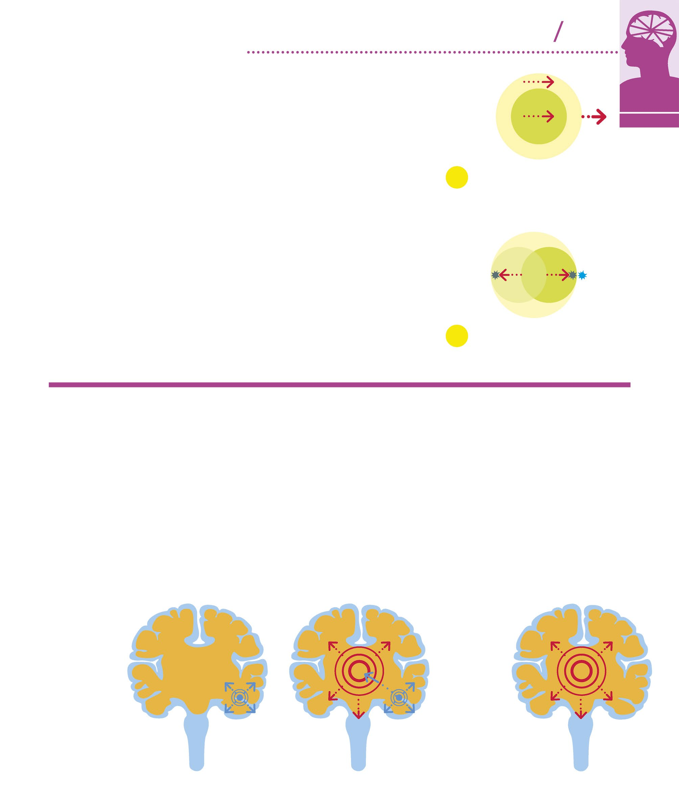
Chấn thương đầu
Những cú va chạm nhẹ vào đầu hoặc tổn thương chỉ ở da đầu không gây hậu quả lâu dài. Tuy nhiên, tổn thương não lại có thể cực kỳ nghiêm trọng và gây tử vong.
HỘP SỌ
Tổn thương trực tiếp não có thể xảy ra khi cả da đầu và hộp sọ đều bị xuyên thủng. Tổn thương gián tiếp xảy ra do cú đập vào đầu mà không làm hỏng hộp sọ. Trong cả hai trường hợp, chấn thương đầu có thể làm vỡ mạch máu, gây xuất huyết não. Chấn thương đầu nhẹ thường chỉ gây triệu chứng nhẹ, tồn tại ngắn, chẳng hạn như bầm tím. Trong một số trường hợp, có thể xảy ra chấn động não (concussion), gây lú lẫn, chóng mặt và mờ mắt, kéo dài đến vài ngày. Có thể xảy ra mất trí nhớ sau chấn động. Chấn động lặp lại dẫn đến tổn thương não có thể nhận thấy, chẳng hạn như suy giảm khả năng nhận thức, run và động kinh (epilepsy). Chấn thương đầu nặng có thể gây bất tỉnh hoặc hôn mê và thường gây tổn thương não. Trong các trường hợp không tử vong, hậu quả của tổn thương não có thể gồm yếu, liệt, trí nhớ và/hoặc khả năng tập trung kém, suy giảm trí tuệ, thậm chí thay đổi tính cách. Những hậu quả này có thể kéo dài hoặc vĩnh viễn.
1
như trên xe đạp hoặc trong ô tô—hộp sọ và não di chuyển với cùng tốc độ.
2
phía trước hộp sọ, bật lại và bị tổn thương thêm khi chạm vào phía sau hộp sọ.
CÓ KHOẢNG 60 LOẠI CƠN ĐỘNG KINH
Động kinh là một rối loạn chức năng não, từ nhẹ đến đe dọa tính mạng, trong đó có các cơn động kinh lặp đi lặp lại hoặc các đợt ý thức thay đổi, do hoạt động điện bất thường trong não gây ra.
Nguyên nhân của động kinh thường không rõ, nhưng trong một số trường hợp có thể do một tình trạng não như khối u hoặc áp-xe, chấn thương đầu, đột quỵ hay mất cân bằng hóa chất. Cơn động kinh (seizures) có thể toàn thể (generalized) hoặc cục bộ (partial), tùy theo mức độ hoạt động điện bất thường ảnh hưởng đến bao nhiêu phần của não.
Có một số loại cơn động kinh. Trong cơn co giật toàn thân (tonic-clonic, hay còn gọi là grand mal), nạn nhân mất ý thức, dù cơ thể cứng lại trước khi các cử động không kiểm soát của tay chân bắt đầu, kéo dài đến vài phút. Một dạng khác là cơn động kinh vắng mặt (absence, hay petit mal).
Cơn động kinh cục bộ có thể chuyển thành toàn thể
Cơn động kinh cục bộ Người bệnh vẫn giữ ý thức, đầu và mắt có thể quay sang một bên, và một bàn tay, cánh tay hoặc má có thể tê ngứa hoặc giật.
Cơn động kinh toàn thể Người bệnh có thể mất nhận thức hoặc bất tỉnh. Các cơn co giật ngắn ngủi nhưng có thể lặp lại nhanh chóng hoặc nhiều lần trong ngày.
- NÃO
- Chuyển động nhanh Khi một người đang di chuyển nhanh—ví dụ
- Não va chạm 2
- Cú đập vào đầu
- Não va chạm 1
- Dừng đột ngột Khi va chạm, não lao mạnh vào
- Động kinh
- Hầu hết hoặc toàn bộ não bị ảnh hưởng
- Chỉ một phần của não bị ảnh hưởng
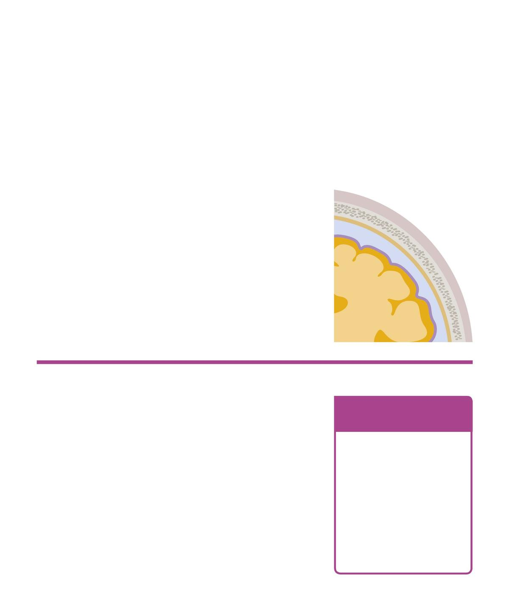
Viêm màng não và viêm não
Viêm màng não (meningitis) và viêm não (encephalitis) là các bệnh viêm chủ yếu do nhiễm trùng gây ra. Cả hai đều có thể gây các triệu chứng như sốt đột ngột, cứng gáy, nhạy cảm với ánh sáng, đau đầu, buồn ngủ, nôn mửa, lú lẫn và co giật.
Viêm màng não là nhiễm trùng màng não—các màng bảo vệ não và tủy sống, chứa dịch não tủy lưu thông khắp toàn bộ hệ thần kinh. Khi nhiễm trùng làm các màng này sưng lên, tình trạng viêm cuối cùng có thể ảnh hưởng đến mọi bộ phận của cơ thể. Trẻ nhỏ có hệ miễn dịch chưa phát triển đầy đủ dễ bị nhất, dù bệnh có thể tấn công người ở mọi lứa tuổi. Nguyên nhân chính của viêm màng não là vi trùng xâm nhập cơ thể, dưới dạng vi khuẩn—cũng có thể gây nhiễm khuẩn huyết, hay ngộ độc máu—virus hoặc nhiễm nấm. Viêm não là tình trạng viêm chính bản thân não, do nhiễm trùng hoặc do hệ miễn dịch tấn công nhầm vào não. Người ở bất kỳ lứa tuổi nào cũng có thể mắc viêm não, gây các triệu chứng nghiêm trọng như yếu cơ, sa sút trí tuệ đột ngột, mất ý thức, co giật, thậm chí tử vong.
Tuy nhiên, một số loại thuốc, chẳng hạn như thuốc gây mê, chứa chất có thể kích thích màng não, gây viêm màng não.
M À N G N H Ệ N
Vị trí nhiễm trùng Màng não gồm màng cứng ở ngoài, màng nhện ở giữa và màng mềm ở trong. Trong mọi dạng viêm màng não, các màng này bị viêm và làm suy giảm chức năng não.
Áp-xe não
Áp-xe não (brain abscess), còn gọi là áp-xe não bộ (cerebral abscess), là những khối sưng chứa mủ trong não, thường hình thành sau nhiễm trùng hoặc chấn thương đầu nặng làm vi khuẩn hoặc nấm xâm nhập vào mô não.
DỊ TẬT TIM BẨM SINH
Áp-xe não cũng có thể là biến chứng hiếm gặp của một nhóm bệnh gọi là bệnh tim xanh (cyanotic heart disease), vốn là dị tật bẩm sinh (có mặt từ khi sinh). Những bệnh này gây dòng chảy bất thường qua tim và phổi, khiến máu ít oxy được bơm đi khắp cơ thể. Máu thiếu oxy này làm da của trẻ bị ảnh hưởng trở nên xanh, hay xanh tím, và hạn chế nghiêm trọng hoạt động thể chất.
Triệu chứng của áp-xe não có thể phát triển chậm hoặc nhanh. Chúng có thể gồm đau đầu khu trú không giảm khi dùng thuốc giảm đau, các vấn đề thần kinh như yếu cơ và nói lắp, thay đổi trạng thái tinh thần, sốt cao, co giật, buồn nôn, cứng gáy và thay đổi thị giác. Áp-xe não thường do nhiễm trùng ở một bộ phận khác trong hộp sọ, chẳng hạn như nhiễm trùng tai hoặc viêm xoang; nhiễm trùng ở bộ phận khác của cơ thể—ví dụ, viêm phổi lan qua đường máu; hoặc chấn thương, chẳng hạn như chấn thương đầu nặng làm nứt hộp sọ. Việc đánh giá và chẩn đoán áp-xe não được thực hiện qua xét nghiệm máu và chụp CT hoặc MRI. Thuốc và phẫu thuật là các phương pháp điều trị phổ biến nhất.
- 1 TRIỆU
- Viêm não
- Màng cứng
- Màng mềm
- NÃO
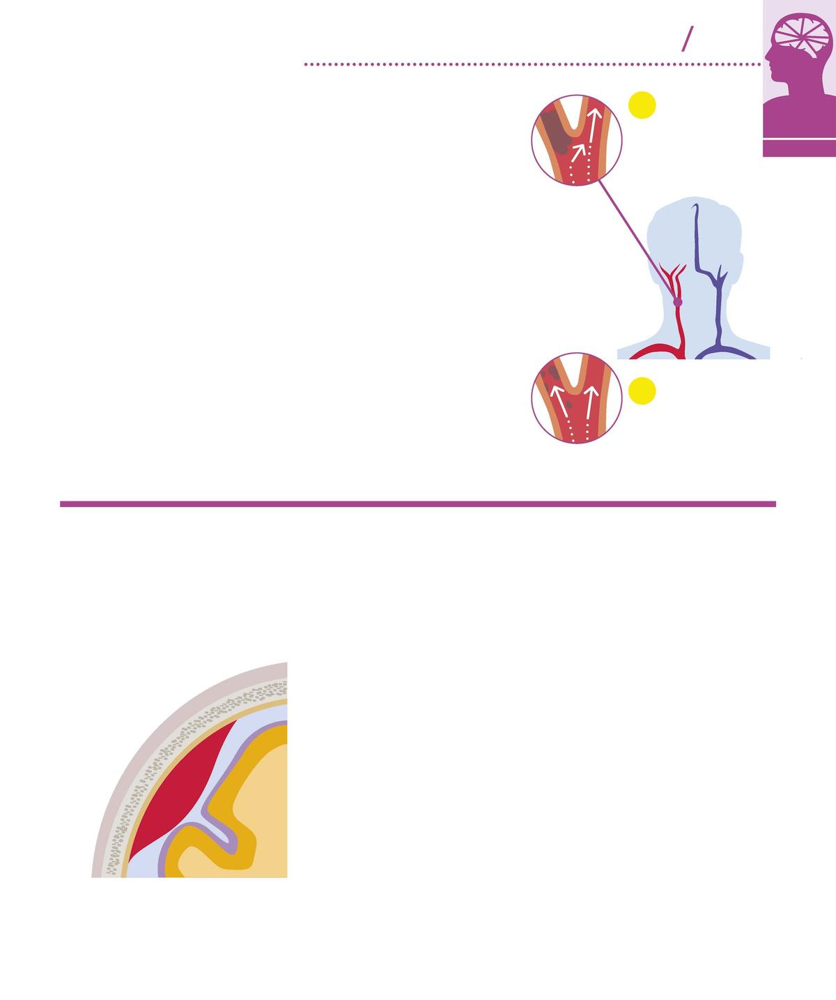
1
Cục máu đông hình thành khi một số thành phần của máu đông lại. Các yếu tố khởi phát gồm chấn thương đầu, độ cao hoặc lối sống.
Cơn thiếu máu não thoáng qua (transient ischemic attack), hay TIA, giống như đột quỵ (xem bên dưới), xảy ra khi nguồn cung cấp máu đến não bị gián đoạn. Tuy nhiên, khác với đột quỵ, TIA chỉ kéo dài trong thời gian ngắn.
Dòng máu bị tắc
TIA thường được gọi là “đột quỵ nhỏ” và có thể là dấu hiệu báo trước. Các dấu hiệu của TIA thường biến mất trong vòng một giờ và giống với những dấu hiệu thấy ở giai đoạn sớm của đột quỵ. Triệu chứng gồm yếu, liệt hoặc tê đột ngột ở mặt, tay hoặc chân, thường ở một bên cơ thể; nói lắp và khó hiểu lời người khác; mù hoặc nhìn đôi; chóng mặt hoặc mất thăng bằng hay phối hợp; và đau đầu dữ dội đột ngột không rõ nguyên nhân. Tùy theo vùng não bị ảnh hưởng, triệu chứng có thể giống hoặc khác nhau.
Dòng máu lưu thông lại
TIA thường xảy ra vài giờ hoặc vài ngày trước cơn đột quỵ, vì vậy điều cực kỳ quan trọng là phải tìm kiếm sự chăm sóc y tế ngay sau khi bị TIA. Khoảng một trong ba người bị TIA sẽ bị đột quỵ, và khoảng một nửa trong số đó xảy ra trong vòng một năm kể từ TIA ban đầu.
2
Thuốc làm loãng máu hoặc phẫu thuật lấy cục máu đông có thể giải quyết tắc nghẽn, giúp máu lưu thông bình thường.
Đột quỵ (stroke) là tình trạng đe dọa tính mạng xảy ra khi nguồn cung cấp máu đến não bị cắt đứt. Có hai loại chính: đột quỵ thiếu máu (ischemic) và đột quỵ xuất huyết (hemorrhagic), mỗi loại ảnh hưởng đến não theo cách khác nhau.
Nếu nguồn cung cấp máu đến não bị giảm hoặc gián đoạn, mô não bị thiếu oxy và dưỡng chất. Khi điều này xảy ra, tế bào não bắt đầu chết trong vài phút. Đột quỵ có thể do tắc nghẽn, thường là cục máu đông (thiếu máu), hoặc do máu tràn vào não hay các mô bao quanh (xuất huyết), thường vì mạch máu hoặc động mạch bị vỡ. Các triệu chứng có thể gồm nói lắp; liệt (sụp) hoặc tê mặt, tay hoặc chân, thường chỉ ở một bên cơ thể; khó nhìn bằng một hoặc cả hai mắt; và đau đầu dữ dội đột ngột, chóng mặt và mất phối hợp.
Xuất huyết não có thể do những điểm yếu trên mạch máu tạo thành chỗ phình động mạch (aneurysm) bị vỡ, thường do huyết áp cao. Nếu hiện tượng này xảy ra giữa hai màng trong bao quanh não, được gọi là xuất huyết dưới nhện (subarachnoid hemorrhage). Nguyên nhân xuất huyết trong mô não (intracerebral hemorrhage) gồm chấn thương, khối u hoặc dùng thuốc.
NÃO
Tụ máu dưới màng cứng (subdural hematoma, xuất huyết) Chảy máu giữa các lớp bảo vệ ngoài của não, tức màng não, tạo thành cục máu đông gây áp lực lên não, dẫn đến đột quỵ.
- TIA
- Tắc nghẽn tạm thời
- Tắc nghẽn
- Động mạch cảnh cung cấp máu cho não
- Động mạch nách
- Tìm kiếm điều trị
- Tiêu tan tắc nghẽn
- Tắc nghẽn tiêu tan
- Đột quỵ và xuất huyết
- Màng nhện · Màng mềm
- Máu trong não
- D A Đ Ầ U · H Ộ P S Ọ · M Á U
- Màng cứng

Khối u não
Khối u não (brain tumor) do các tế bào nhân lên bất thường. Nó có thể xuất hiện ở bất kỳ vị trí nào trong não, từ khoảng sọ giữa não và hộp sọ đến sâu bên trong não. Khối u có thể lành tính hoặc ác tính, và cách điều trị vì thế mà khác nhau.
Khối u
Có khoảng 130 loại khối u não, được phân loại theo loại khối u hoặc vùng não nơi chúng phát triển. Một số mất nhiều năm để hình thành, trong khi số khác phát triển nhanh hơn và hung hăng hơn. Khối u não có thể xuất hiện ở người ở mọi lứa tuổi hoặc giai đoạn cuộc đời.
phần trăm khối u bắt đầu ở màng não—các màng bao quanh và bảo vệ não và tủy sống. Những khối u này thường dễ điều trị hơn nếu phát hiện sớm. Khoảng 10% khối u não xuất hiện ở tuyến yên hoặc tuyến tùng, được bao quanh bởi mô não. Ở trẻ em, tình hình hơi khác. Khoảng 60% khối u thời thơ ấu xuất hiện ở tiểu não hoặc thân não. Chỉ 40% khối u phát sinh ở đại não.
Vị trí và loại
Phẫu thuật não qua đường mũi Các bác sĩ hiện có thể mổ một số khối u não qua mũi. Thủ thuật này ít xâm lấn hơn nhiều so với mở hộp sọ (craniotomy), trong đó hộp sọ được mở và não được phơi bày.
Các loại khối u não phổ biến nhất ở người lớn được tìm thấy ở đại não (xem tr.28–29). Khoảng 24
NGUYÊN NHÂN THƯỜNG GẶP CỦA SA SÚT TRÍ TUỆ
Sa sút trí tuệ (dementia) là thuật ngữ chỉ một nhóm bệnh liên quan đến suy giảm chức năng tinh thần, thường gặp nhất ở người lớn trên 65 tuổi. Có nhiều loại sa sút trí tuệ khác nhau.
Sa sút trí tuệ có thể do nhiều rối loạn khác nhau gây ra. Dưới đây là một số nguyên nhân phổ biến nhất.
Bệnh Alzheimer
Tình trạng tiến triển, trong đó các khối protein, gọi là mảng bám (plaques), làm tổn thương não.
Dù do lượng máu đến não giảm, sự tích tụ các lắng đọng protein, hay các dạng tổn thương khác, sa sút trí tuệ ở mọi dạng đều là rối loạn tiến triển. Các triệu chứng thường gồm đãng trí nhẹ, có thể phát triển thành thờ ơ hoặc trầm cảm, giảm giao tiếp xã hội và mất kiểm soát cảm xúc. Ở giai đoạn muộn, người bị sa sút trí tuệ có thể mất khả năng thông cảm hoặc đồng cảm, hoặc không tự tổ chức được hoạt động hàng ngày. Họ thường rất lú lẫn, không nhận ra người thân hoặc không biết mình đang ở đâu. Họ có thể ảo giác, gặp khó khăn trong ngôn ngữ và cần giúp đỡ cho những hoạt động cơ bản như tự ăn hoặc tự mặc đồ. Dù không có cách chữa khỏi sa sút trí tuệ, chẩn đoán và điều trị sớm có thể làm chậm tốc độ suy giảm tinh thần. Chụp não làm nổi bật những vùng não bị ảnh hưởng nhiều nhất ở từng người, từ đó điều trị có thể được điều chỉnh phù hợp. Ví dụ, vùng bị ảnh hưởng nhiều nhất trong bệnh Alzheimer là vỏ não. Bộ phận này của não bao gồm hải mã, nơi hình thành những ký ức mới.
Sa sút trí tuệ mạch máu
Lưu lượng máu đến não suy giảm, chẳng hạn như do đột quỵ, dẫn đến suy giảm chức năng.
Sa sút trí tuệ thể Lewy
Các lắng đọng protein trong tế bào thần kinh của não ảnh hưởng đến tư duy, trí nhớ và kiểm soát vận động.
Sa sút trí tuệ thùy trán-thùy thái dương
Dạng xuất hiện ở phía trước và hai bên não, ảnh hưởng đến hành vi và ngôn ngữ.
Bệnh Parkinson
Hầu hết người bị bệnh Parkinson phát triển chứng sa sút trí tuệ, được cho là liên quan đến các thể Lewy.
Bệnh Creutzfeldt-Jakob (CJD)
Hiếm gặp, tiến triển nhanh và gây tử vong, bệnh này do một protein lây nhiễm gọi là prion gây ra.
- NÃO
- HỐNG MŨI
- N Ộ I S O I
- Sa sút trí tuệ
- Chẩn đoán
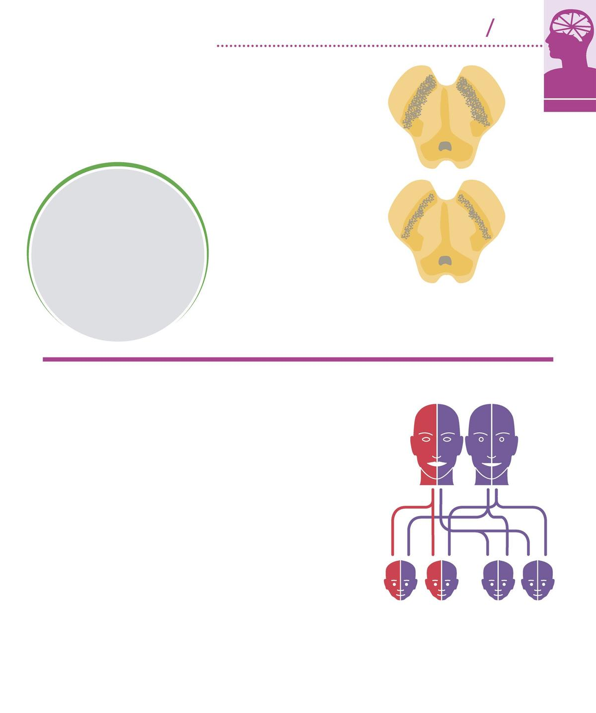
Bệnh Parkinson
Bệnh Parkinson (Parkinson's disease) là bệnh thoái hóa phổ biến thứ hai sau bệnh Alzheimer (xem tr.50), một rối loạn thần kinh ảnh hưởng đến vận động và di chuyển bằng cách phá hủy các tế bào sản xuất dopamine ở chất đen (substantia nigra), nằm ở phần trên cùng của thân não.
NÃO KHỎE MẠNH
Các triệu chứng biểu hiện dần dần, đôi khi bắt đầu bằng run nhẹ ở một bàn tay. Các dấu hiệu khác gồm cứng cơ, nói lắp và chậm chạp chung trong vận động. Giai đoạn sớm của bệnh thường ảnh hưởng một bên cơ thể, nhưng khi 80% chất đen chết đi, tình trạng tàn phế nặng xảy ra. Người bệnh giai đoạn cuối cần hỗ trợ cho mọi công việc hàng ngày. Parkinson chủ yếu tấn công người lớn từ 60 tuổi trở lên và ảnh hưởng đến nam nhiều hơn nữ.
Kích thích não sâu (deep-brain stimulation, DBS) liên quan đến việc cấy điện cực vào não bằng phẫu thuật, có thể kiểm soát nhưng không chữa khỏi các triệu chứng vận động của bệnh Parkinson.
NÃO BỆNH
Thay đổi ở chất đen Parkinson ảnh hưởng đến các tế bào thần kinh ở chất đen, vốn sản xuất chất dẫn truyền thần kinh dopamine. Khi các tế bào chết đi, mức dopamine giảm, làm rối loạn kiểm soát vận động.
CHA MẸ ẢNH HƯỞNG · CHA MẸ KHÔNG ẢNH HƯỞNG
Bệnh Huntington (Huntington's disease) là rối loạn não tiến triển do đột biến gen gây ra. Các dấu hiệu sớm gồm cáu kỉnh, trầm cảm, cử động không tự ý, phối hợp kém và khó ra quyết định hoặc học thông tin mới.
Huntington thể người lớn là dạng phổ biến nhất của bệnh, thường xuất hiện ở người 30 đến 40 tuổi. Bệnh ảnh hưởng đến 3 đến 7 trên 100.000 người gốc châu Âu. Ít phổ biến hơn, bệnh bắt đầu ở tuổi thơ hoặc thanh thiếu niên, gây vấn đề vận động và thay đổi tinh thần, cảm xúc. Nhiều người bị Huntington phát triển các cử động giật không tự ý gọi là múa giật (chorea), trở nên rõ rệt hơn khi bệnh tiến triển. Tiên lượng cho người bị Huntington thể người lớn là tuổi thọ 15 đến 20 năm sau khi triệu chứng bắt đầu. Các triệu chứng bổ sung của Huntington thể thiếu niên gồm vận động chậm, vụng về, té ngã thường xuyên, cứng đờ, nói lắp và chảy nước dãi. Họ có thể khó đi lại, nói và nuốt, cũng như thay đổi tính cách và suy giảm xử lý suy nghĩ. Khả năng tư duy và lập luận bị suy giảm, ảnh hưởng đến kết quả học tập. Co giật xảy ra ở 30 đến 50% trẻ bị bệnh này. Huntington thể thiếu niên có xu hướng tiến triển nhanh.
TRẺ KHÔNG ẢNH HƯỞNG
Kiểu di truyền Huntington được xếp vào bệnh di truyền. Bệnh xảy ra khi một gen khiếm khuyết duy nhất được truyền từ cha mẹ bị ảnh hưởng.
- Số trung bình nơ-ron có sắc tố
- Giảm rõ rệt số nơ-ron có sắc tố
- Bệnh Huntington
- Có gen Huntington
- Chỉ có gen bình thường
- Múa giật Huntington
- TRẺ ẢNH HƯỞNG
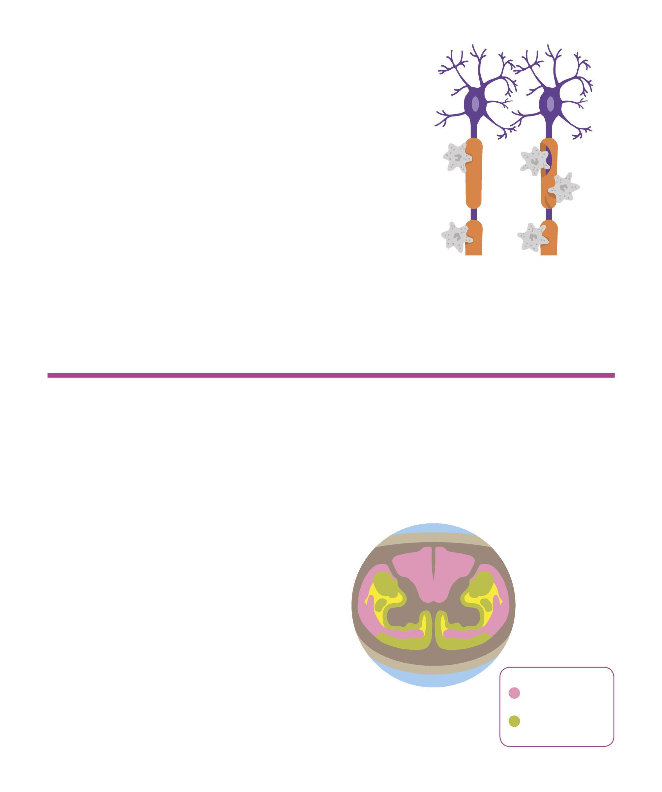
Xơ cứng đa ổ
Xơ cứng đa ổ (multiple sclerosis), hay MS, là tình trạng ảnh hưởng đến cả não và tủy sống. Người ta cho rằng bệnh xảy ra khi hệ miễn dịch của cơ thể nhầm làm tổn thương các vỏ bọc thần kinh bảo vệ.
Vùng mất bao myelin
Các tế bào bao myelin, làm từ protein và chất béo, bao quanh nơ-ron trong hệ thần kinh trung ương, giúp thông điệp đi lại nhanh và êm giữa não và phần còn lại của cơ thể. Khi MS phát triển, hệ miễn dịch—vốn chống nhiễm trùng và viêm—dường như nhầm bao myelin thành vật lạ và tấn công bằng đại thực bào, làm tổn thương và bóc nó đi. Những sẹo, hay mảng bám, mà hành động này để lại làm gián đoạn các xung thường truyền dọc theo sợi thần kinh hay sợi trục. Thông điệp thần kinh chậm lại, bị méo hoặc hoàn toàn không đến nơi. MS có thể xảy ra ở mọi lứa tuổi nhưng thường được chẩn đoán ở người 20 hoặc 30 tuổi. Triệu chứng sớm gồm chóng mặt, thay đổi thị giác và yếu cơ. Ở giai đoạn muộn, nói, vận động và nhận thức có thể bị ảnh hưởng. Dạng tiến triển của bệnh dẫn đến tàn phế.
GIAI ĐOẠN MUỘN
Số lượng đại thực bào và các giai đoạn MS Khi MS bắt đầu, đại thực bào loại bỏ mô tổn thương nhưng cũng giúp sửa chữa nó. Tuy nhiên, ở giai đoạn muộn, số lượng của chúng tăng lên và thực sự làm tăng mất bao myelin, khiến triệu chứng nặng hơn.
Bệnh thần kinh vận động (motor neuron disease), hay MND, là thuật ngữ chung để mô tả một nhóm bệnh ảnh hưởng đến nơ-ron vận động—các dây thần kinh ở não và tủy sống báo cho mọi cơ trong cơ thể phải làm gì.
Dù nguyên nhân là gì, hầu hết các dạng MND gây triệu chứng gồm yếu và teo cơ chung, chuột rút, khó nuốt, mất dần khả năng nói và yếu tay chân. Chẩn đoán gồm chụp MRI, sinh thiết cơ và xét nghiệm máu, nước tiểu. Dù hiện chưa có cách chữa khỏi MND, các triệu chứng có thể được quản lý để mang lại chất lượng sống tốt nhất cho người bệnh.
Yếu tố di truyền, môi trường và lối sống được cho là góp phần gây MND. Tiếp xúc với kim loại nặng hoặc hóa chất nông nghiệp, chấn thương điện hoặc cơ học, phục vụ quân đội hay tập luyện quá mức đều đã được điều tra như nguyên nhân có thể, với kết quả trái ngược. Tuy nhiên, một số dạng MND có cơ sở di truyền. Teo hành não tiến triển (progressive bulbar atrophy), còn gọi là bệnh Kennedy, do gen đột biến gây ra và chủ yếu ảnh hưởng nam giới. Bệnh Kennedy đặc biệt làm tổn thương phần thân não dưới hình dạng củ hành, nơi có các nơ-ron kiểm soát cơ ở mặt và họng.
Dây thần kinh ở sừng lưng (sau) mang tín hiệu cảm giác từ cơ thể đến não
Các bó đi lên mang tín hiệu cảm giác
Các bó tủy sống Các dạng MND khác nhau liên quan đến các bó nơ-ron khác nhau, nằm ở sừng lưng, sừng bên và sừng bụng của tủy sống.
- Thân tế bào
- Đại thực bào
- Lớp bao myelin
- Sợi trục thần kinh
- Mô sẹo
- GIAI ĐOẠN SỚM
- Bệnh thần kinh vận động
- Dây thần kinh ở sừng bên kiểm soát các cơ quan nội tạng
- Dây thần kinh ở sừng bụng (trước) kiểm soát cơ xương
- CHÚ GIẢI
- Các bó đi xuống kiểm soát thân và tay chân
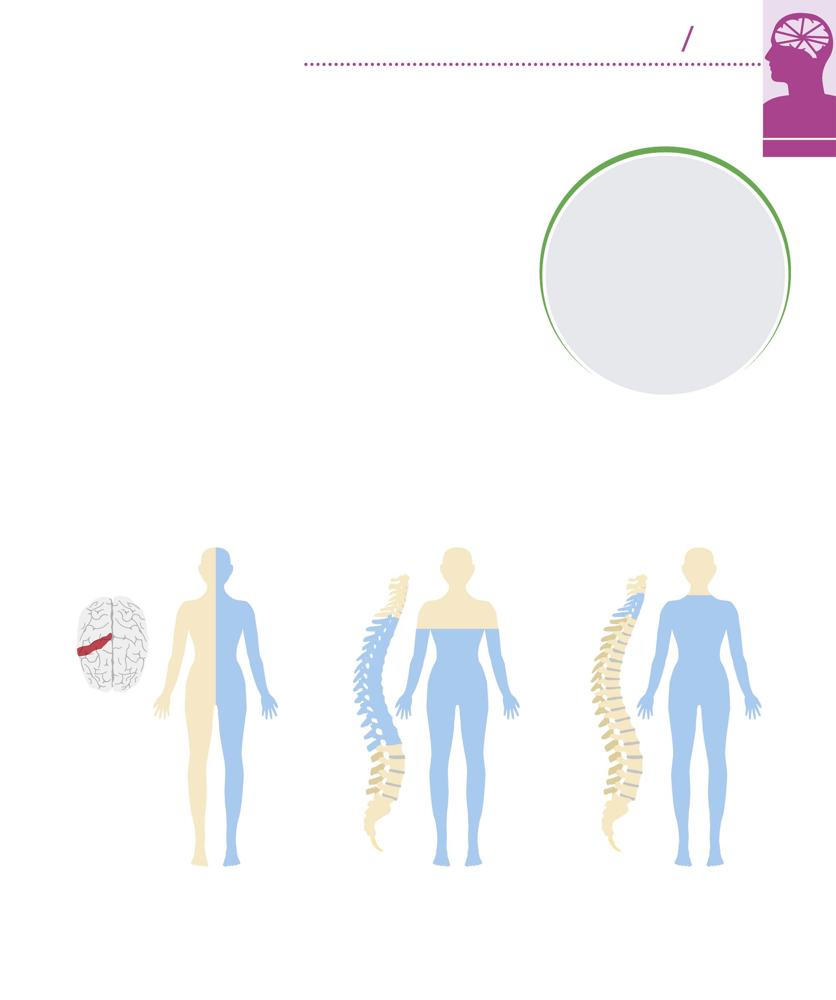
Liệt
Triệu chứng chính của liệt là mất khả năng kiểm soát ý muốn đối với vận động ở một phần cơ thể. Bệnh được phân loại theo vùng cơ thể bị ảnh hưởng. Đôi khi chỉ một cơ hoặc một nhóm cơ nhỏ bị ảnh hưởng, nhưng liệt cũng có thể toàn thể, dẫn đến mất hoàn toàn chức năng vận động. Nó có thể ngắt quãng hoặc gây tàn phế vĩnh viễn.
NGUYÊN NHÂN PHỔ BIẾN NHẤT CỦA LIỆT LÀ GÌ?
Liệt có thể ảnh hưởng đến bất kỳ bộ phận nào của cơ thể, gồm mặt, bàn tay, một cánh tay hoặc một chân (liệt một chi), một bên cơ thể (liệt nửa người), cả hai chân (liệt hai chân) và cả hai tay chân (liệt bốn chi). Cơ thể cũng có thể trở nên cứng hoặc đơ (liệt co thắt) với các cơn co cơ thỉnh thoảng, hoặc mềm nhũn (liệt mềm). Liệt có thể do chấn thương, hoặc do nhiều rối loạn khác nhau, mỗi loại đều cần đánh giá của chuyên gia. Đột quỵ hoặc cơn thiếu máu não thoáng qua (xem tr.199) có thể gây yếu đột ngột ở một bên mặt, yếu ở một cánh tay hoặc nói lắp. Liệt Bell (Bell's palsy) là yếu đột ngột ảnh hưởng một bên mặt, kèm đau tai hoặc đau mặt. Ngoài ra, chấn thương nặng ở đầu hoặc tủy sống có thể gây liệt, cũng như khối u, hội chứng Guillain-Barré, bại não và nứt đốt sống. Bệnh Lyme do ve truyền gây liệt có thể bắt đầu vài tuần, vài tháng hoặc vài năm sau vết cắn ban đầu. Các nguyên nhân khác của liệt gồm rối loạn não.
Tại Hoa Kỳ, nguyên nhân phổ biến nhất là đột quỵ, tiếp theo là chấn thương tủy sống và xơ cứng đa ổ.
Bên kia của cơ thể bị liệt
Liệt nửa người Liệt ảnh hưởng một bên cơ thể, thường thấy như hệ quả của đột quỵ hoặc khối u não ảnh hưởng đến vỏ não vận động. Liệt nửa người cũng có thể do chấn thương não.
Liệt hai chân Liệt ảnh hưởng hai chân, đôi khi cả một phần thân, thường do chấn thương tủy sống, nhưng có thể phát sinh từ tổn thương não do chấn thương hoặc một bệnh lý như khối u tủy, khối u não hoặc nứt đốt sống.
Liệt bốn chi Còn gọi là liệt tứ chi, cả hai tay và chân bị liệt một phần hoặc hoàn toàn, cũng như cơ thể từ cổ trở xuống, thường là hệ quả của gãy phần dưới của cổ.
- Nguyên nhân chính của liệt
- NHÌN TỪ TRÊN XUỐNG
- Đốt sống cổ 4
- Đốt sống ngực 1
- Đốt sống cổ 7
- Phía trước não
- Đốt sống thắt lưng 1
- Vỏ não vận động bị ảnh hưởng
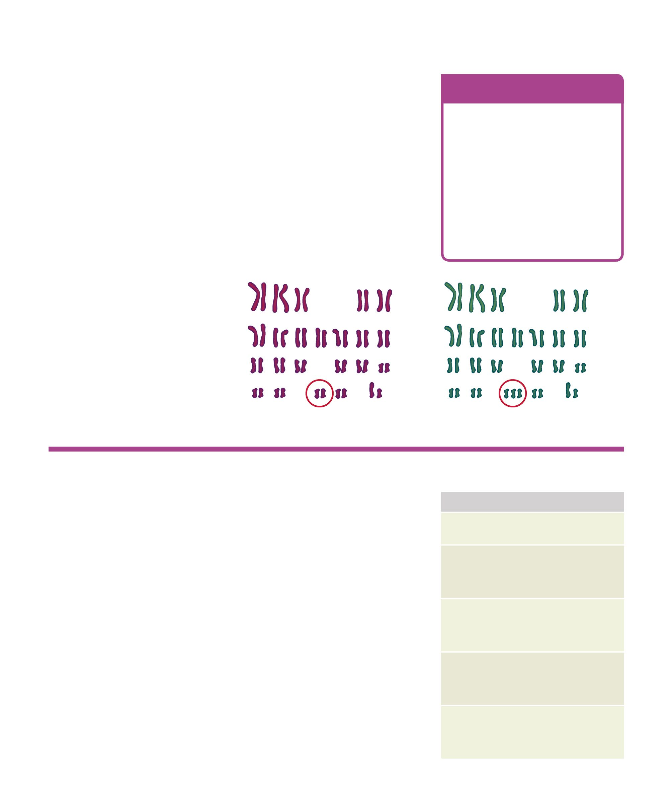
CÁC XÉT NGHIỆM SÀNG LỌC
Hội chứng Down ảnh hưởng đến cả phát triển thể chất lẫn tinh thần, xuất hiện khi một bản sao thừa của nhiễm sắc thể được tạo ra một cách ngẫu nhiên do quá trình phân chia tế bào bất thường. Trẻ sinh ra với tình trạng này có những đặc điểm khuôn mặt dễ nhận biết và sự chậm trễ phát triển rõ rệt ngay từ đầu thời kỳ sơ sinh.
Các xét nghiệm sàng lọc trước sinh như xét nghiệm máu và siêu âm giúp dự đoán liệu một đứa trẻ có thể có nguy cơ mắc hội chứng Down hay không. Nếu nguy cơ cao, có thể tiến hành thêm hai xét nghiệm chẩn đoán: lấy mẫu lông màng đệm (chorionic villus sampling) và chọc dò nước ối (amniocentesis), phân tích các tế bào thai và dịch ối để phát hiện bất thường nhiễm sắc thể.
Hội chứng Down còn được gọi là tam nhiễm sắc thể 21 (trisomy 21), vì nó tạo ra bản sao thứ ba của nhiễm sắc thể 21. Các thí nghiệm trên chuột đã cho thấy sự hiện diện của nhiễm sắc thể thừa này làm gián đoạn chức năng của các mạch não liên quan đến trí nhớ và học tập, chủ yếu ở vùng hải mã (hippocampus). Khả năng một đứa trẻ mắc hội chứng Down tăng lên theo tuổi của người mẹ khi mang thai.
Mọi người sinh ra với tình trạng này đều có một mức độ khuyết tật học tập nào đó. Một số vấn đề sức khỏe như bệnh tim, khiếm thính và các vấn đề về thị lực phổ biến hơn ở người mắc hội chứng Down.
Bộ nhiễm sắc thể bình thường và bộ nhiễm sắc thể 21 thừa: Hai kiểu nhân (karyotype), tức ảnh chụp toàn bộ bộ nhiễm sắc thể, cho thấy một nam giới bình thường có hai bản sao nhiễm sắc thể 21 và một nam giới mắc hội chứng Down có ba bản sao.
Bại não (Cerebral palsy)
Bại não, hay CP, là nhóm rối loạn làm suy giảm vận động, phối hợp và nhận thức. Đây là dạng khuyết tật vận động phổ biến nhất ở trẻ em và được định nghĩa rộng rãi là bẩm sinh hoặc mắc phải.
CÁC LOẠI BẠI NÃO
Bại não được phân loại theo rối loạn vận động liên quan. Một số loại được liệt kê dưới đây.
Bại não co cứng (hay liệt hai bên) (Spastic CP)
Hầu hết trẻ được chẩn đoán mắc bại não bẩm sinh, xảy ra trước hoặc trong lúc sinh do tổn thương não, chẳng hạn như một ca sinh khó khiến não bị thiếu oxy. Tuy nhiên, nhiễm trùng não hoặc chấn thương đầu nghiêm trọng cũng có thể gây bại não mắc phải sau hơn 28 ngày kể từ khi sinh. Tính chất của các triệu chứng bại não phụ thuộc vào vị trí tổn thương não, nhưng tổn thương thường nằm ở vỏ não vận động (motor cortex), vùng kiểm soát vận động.
Các triệu chứng và mức độ nghiêm trọng khác nhau rất nhiều và trở nên rõ rệt hơn khi trẻ lớn lên. Nhiều dấu hiệu của bại não thậm chí không dễ nhận thấy ở trẻ sơ sinh. Một số trẻ bị bại não có khả năng vận động, nói và trí tuệ suy giảm, có thể cần xe lăn hoặc cần hỗ trợ trong các hoạt động hằng ngày. Những trẻ khác có thể mềm nhũn hoặc cứng đơ, chi yếu hoặc đi lại khó khăn. Tùy vào loại bại não và cách điều trị, người bệnh có thể sống được từ 30 đến 70 năm.
Người mắc loại này rất cứng đơ và không thể thư giãn tay chân cùng cơ bắp. Họ có thể đi bằng đầu ngón chân hoặc với chân hướng vào trong.
Bại không định hình (hay loạn vận động) (Athetoid CP)
Người mắc dạng này không thể kiểm soát nhiều bộ phận trên cơ thể và thực hiện các cử động vặn vẹo hoặc giật không tự chủ.
Bại não thất điều (Ataxic cerebral palsy)
Khả năng giữ thăng bằng và phối hợp bị ảnh hưởng, và thường mất khả năng kiểm soát cơ theo ý muốn khi thực hiện các kỹ năng vận động tinh như viết.
Bại não hỗn hợp (Mixed cerebral palsy)
Bại não hỗn hợp gồm sự kết hợp các triệu chứng của nhiều dạng bại não, do một số trung tâm kiểm soát vận động trong não bị tổn thương.
- Hội chứng Down (Down syndrome)
- BỘ NHIỄM SẮC THỂ BÌNH THƯỜNG
- BỘ NHIỄM SẮC THỂ TAM NHIỄM 21
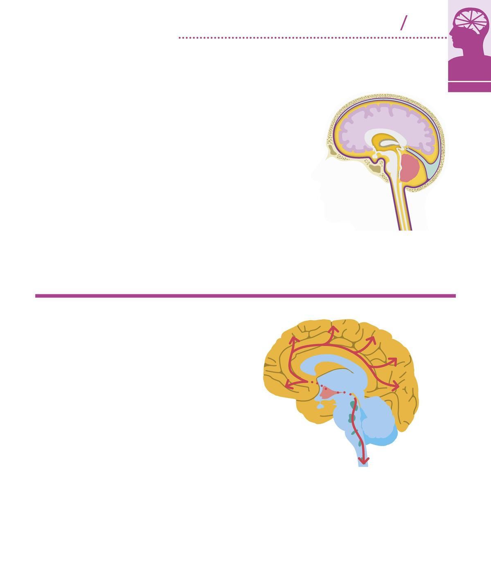
Hộp sọ
Não úng thủy là tình trạng dịch tích tụ trong não, có thể làm tổn thương mô não. Bệnh do dịch não tủy (cerebrospinal fluid) dư thừa hoặc dịch không thoát ra bình thường gây ra. Não úng thủy mắc phải và não úng thủy áp lực bình thường (normal-pressure hydrocephalus) là hai dạng khởi phát ở người lớn, nhưng bệnh cũng có thể xảy ra ở trẻ em.
Não thất bên
Não úng thủy mắc phải do tổn thương não sau đột quỵ, xuất huyết, khối u não hoặc viêm màng não. Các hốc não giãn to chứa đầy dịch não tủy dư thừa hoặc chặn những vùng nơi dịch được hấp thụ lại vào máu.
Các triệu chứng chính thường là đau đầu, buồn nôn, mờ mắt và lú lẫn. Ở trẻ em, não úng thủy có thể phát triển sau sinh non, chảy máu trong não hoặc trong trường hợp nứt đốt sống (spina bifida). Ở trẻ sơ sinh và trẻ nhỏ, triệu chứng gồm đầu phình to, nhưng ở trẻ lớn hơn, bệnh có thể biểu hiện bằng những cơn đau đầu dữ dội. Tổn thương do áp lực gây ra có thể dẫn đến mất các kỹ năng phát triển như đi và nói.
Nguyên nhân của các dạng khác
Nguyên nhân của não úng thủy áp lực bình thường thường không rõ, nhưng có thể do các bệnh lý nền như bệnh tim hoặc cholesterol cao.
Dịch trong não Dịch não tủy do đám rối màng mạch tạo ra, một màng tế bào lót các não thất hay hốc của não. Nếu dịch không được hấp thụ lại, nó gây áp lực lên não và gây ra các triệu chứng não úng thủy.
Chứng ngủ rũ (Narcolepsy)
Chứng ngủ rũ là một rối loạn thần kinh hiếm gặp, kéo dài, đặc trưng bởi những cơn ngủ đột ngột. Người bệnh không thể điều chỉnh chu kỳ ngủ – thức bình thường.
Giải phóng hypocretin
Chứng ngủ rũ thường khởi phát quanh tuổi dậy thì và ảnh hưởng như nhau ở cả hai giới. Triệu chứng gồm buồn ngủ quá mức vào ban ngày, ngủ thiếp đi đột ngột, đôi khi đang làm việc gì đó nhưng không nhớ đã làm. Bệnh có thể kèm theo chứng liệt khi ngủ—không thể cử động hoặc nói tạm thời, kèm theo những cơn ác mộng đáng sợ. Thiếu ngủ là tác dụng phụ thường gặp.
Vùng dưới đồi
Hệ hypocretin Chứng ngủ rũ có thể do mức chất hypocretin trong não thấp bất thường; chất này do các tế bào ở vùng dưới đồi tiết ra. Sau khi được giải phóng, hypocretin gửi tín hiệu đến các nơ-ron trong não kiểm soát sự tỉnh táo.
Giải phóng hypocretin
Người bị mất trương lực cơ đột ngột (cataplexy) thấy yếu cơ khi phản ứng với cảm xúc mạnh như vui vẻ, giận dữ hoặc đau đớn. Không có mất ý thức, nhưng người bệnh có thể gục xuống do mất trương lực cơ và thường không nói hay cử động được.
Mất trương lực cơ đột ngột
Khoảng 60 phần trăm người bệnh được xếp vào loại 1, nghĩa là họ cũng bị mất trương lực cơ đột ngột.
- Não úng thủy (Hydrocephalus)
- Đám rối màng mạch
- Não thất ba Cùng não
- Não thất tư
- Tiểu não
- Hạt xanh (locus coeruleus)
- Các nhân raphe
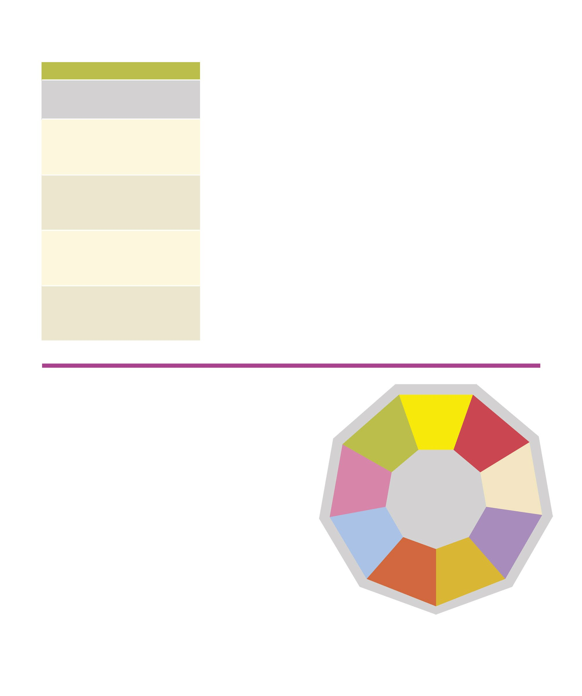
CÁC RỐI LOẠN VỀ Ý THỨC
Có nhiều loại hôn mê, một số được mô tả ở đây. Một vài rối loạn khác cũng có điểm tương đồng với hôn mê.
Hôn mê là trạng thái mất ý thức sâu kéo dài, dù do chấn thương hay được tạo ra để điều trị một bệnh lý. Bệnh nhân hôn mê không đáp ứng và có thể trông như đang ngủ. Tuy nhiên, khác với giấc ngủ sâu, người trong trạng thái hôn mê không thể được đánh thức bằng bất kỳ kích thích nào, kể cả đau.
Tổn thương não do thiếu oxy (Anoxic brain injury)
Trong tình trạng thiếu oxy não (anoxia), não bị đói oxy. Điều này dẫn đến lú lẫn, kích thích hoặc buồn ngủ, xanh tím da (da ngả xanh do oxy trong máu thấp) và mất ý thức hoặc hôn mê.
Hôn mê chủ yếu do chấn thương đầu làm tổn thương não, thường gây sưng, rồi đến lượt nó làm tăng áp lực lên não và tổn thương hệ thống hoạt hóa lưới—vùng não chịu trách nhiệm về sự tỉnh táo và nhận thức. Chảy máu não, thiếu oxy, nhiễm trùng, quá liều thuốc, mất cân bằng hóa học hoặc tích tụ độc tố cũng có thể gây hôn mê, cũng như tác dụng phụ của nhiều tình trạng khác. Việc điều trị hôn mê phụ thuộc vào nguyên nhân cụ thể nhưng nhìn chung gồm các biện pháp hỗ trợ: bệnh nhân được đưa vào phòng chăm sóc tích cực và thường cần hỗ trợ sự sống đầy đủ cho đến khi tình trạng cải thiện. Một cơn hôn mê tạm thời và có thể hồi phục xảy ra trong bệnh tiểu đường, chẳng hạn khi đường huyết duy trì ở mức cực cao hoặc quá thấp. Hơn 50 phần trăm ca hôn mê liên quan đến chấn thương đầu hoặc rối loạn trong hệ tuần hoàn của não.
Hôn mê do y khoa (Medically induced coma)
Hôn mê do thuốc gây ra tình trạng mất ý thức sâu, giúp não hồi phục sau sưng do đột quỵ hoặc chấn thương.
Điều trị
Người mắc hội chứng bị khóa vẫn có ý thức, nhưng tổn thương não gây gần như hoàn toàn liệt. Họ hầu như luôn giao tiếp bằng cử động mắt.
Trạng thái thực vật (Vegetative state)
Người ở trạng thái thực vật không có phản ứng cảm xúc có ý nghĩa, không dùng mắt theo dõi vật thể hay đáp ứng với giọng nói. Khả năng hồi phục thường rất thấp.
NGUYÊN NHÂN BÊN NGOÀI
Không chỉ đơn thuần là cảm thấy buồn, trầm cảm gồm những cảm giác kéo dài về nỗi buồn, tuyệt vọng và thờ ơ, kèm theo rối loạn giấc ngủ, mệt mỏi và thay đổi khẩu vị.
Căng thẳng
Trầm cảm tác động lên mỗi người theo những cách và mức độ khác nhau. Triệu chứng có thể từ nhẹ đến nặng—mức nặng đôi khi được gọi là “trầm cảm lâm sàng” (clinical depression)—và dao động từ cảm giác buồn bã liên tục, dễ khóc và mất hứng thú với các hoạt động bình thường đến không thể thực hiện công việc hằng ngày và nghĩ đến tự tử.
mệt mỏi, mất ngủ hoặc ngủ quá nhiều, sụt cân hoặc tăng cân, giảm ham muốn tình dục và đau đớn cơ thể. Dù có nhiều nguyên nhân, trầm cảm là một căn bệnh thực sự có thể ảnh hưởng đến mọi khía cạnh cuộc sống của một người. Một trong 10 người từng trải qua trầm cảm vào một thời điểm nào đó trong đời, và bệnh có thể ảnh hưởng đến trẻ em cùng vị thành niên. Tùy mức độ nghiêm trọng, điều trị có thể gồm thuốc và liệu pháp tâm lý.
NGUYÊN NHÂN BÊN TRONG • Đặc điểm tính cách • Trải nghiệm thời thơ ấu • Tiền sử gia đình • Các vấn đề sức khỏe kéo dài • Nỗi đau mất người thân
Triệu chứng cơ thể
Trầm cảm và lo âu thường đi cùng nhau. Rối loạn này cũng có thể gây ra các triệu chứng cơ thể, chẳng hạn như
Nguyên nhân của trầm cảm Những sự kiện căng thẳng trong cuộc sống có thể đóng vai trò là yếu tố kích hoạt bên ngoài gây trầm cảm. Chúng tương tác với các nguyên nhân bên trong, bao gồm tiền sử gia đình.
- Hôn mê (Coma)
- Hội chứng bị khóa (Locked-in syndrome)
- Trầm cảm (Depression)
- Nghèo đói & nợ nần
- Vấn đề quan hệ
- Mang thai & sinh con
- Rượu & ma túy
- Cô đơn
- Vấn đề công việc
- Bắt nạt
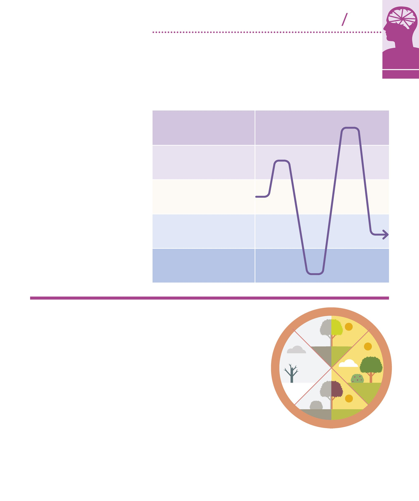
Rối loạn lưỡng cực (Bipolar disorder)
Trước đây được gọi là trầm cảm hưng cảm (manic depression), rối loạn lưỡng cực là tình trạng tâm thần đặc trưng bởi những giai đoạn phấn khích thái quá và trầm cảm xen kẽ, trong đó tâm trạng của người bệnh thay đổi đột ngột từ thái cực này sang thái cực kia.
Các giai đoạn của rối loạn lưỡng cực Mọi người thường trải qua một giai đoạn hưng cảm hoặc hưng cảm nhẹ với cảm giác phấn chấn, rồi một giai đoạn bình ổn, tĩnh lặng, sau đó là các đợt trầm cảm nhẹ hoặc cực kỳ nặng.
Sự thay đổi tâm trạng trong rối loạn lưỡng cực rất khác nhau, và những người mắc bệnh này cũng có thể có tâm trạng “bình thường”. Tuy nhiên, các kiểu biểu hiện không phải lúc nào cũng giống nhau; một số người có thể trải qua chu kỳ nhanh từ phấn chấn sang chán nản, hoặc một dạng trạng thái hỗn hợp. Việc điều trị rối loạn lưỡng cực nhằm giảm mức độ nghiêm trọng và số lượng các đợt đối lập, để người bệnh sống cuộc đời bình thường nhất có thể. Các loại thuốc như thuốc ổn định tâm trạng (mood stabilizers), việc nhận diện các yếu tố kích hoạt và dấu hiệu báo trước, liệu pháp tâm lý như liệu pháp hành vi nhận thức (cognitive behavioral therapy) cùng lời khuyên về lối sống đều được dùng để điều trị. Khi điều trị hiệu quả, các đợt bệnh thường thuyên giảm trong vòng vài tháng.
Hưng cảm Các triệu chứng hưng cảm gồm phấn khích quá mức, nói nhanh, chú ý ngắn hạn, mất ngủ hoặc mất ăn, đôi khi có rối loạn tâm thần (psychosis).
Hưng cảm nhẹ Đây là dạng nhẹ hơn của hưng cảm, kéo dài vài ngày, thường kèm kích thích và hành vi liều lĩnh trong các vấn đề xã hội hoặc tài chính.
Tâm trạng cân bằng Euthymia là thuật ngữ dùng để chỉ trạng thái tâm trạng tương đối ổn định, khi một người không hưng cảm cũng không trầm cảm.
Trầm cảm nhẹ Triệu chứng có thể gồm cảm thấy buồn, tuyệt vọng hoặc dễ cáu; thiếu năng lượng; khó tập trung; và cảm giác tội lỗi.
Trầm cảm Giai đoạn này gây đau đớn về cảm xúc, có thể đặc trưng bởi tâm trạng phẳng lặng, lạm dụng thuốc và rượu, tự làm hại bản thân và ý nghĩ tự tử.
M Ù A X U Â N
Rối loạn cảm xúc theo mùa, hay SAD, là dạng trầm cảm xuất hiện và biến mất theo chu kỳ mùa. Đôi khi nó được gọi là “trầm cảm mùa đông” (winter depression), vì đó là thời điểm các triệu chứng thường nặng hơn.
M Ù A H È
Nguyên nhân chính xác của SAD vẫn chưa được hiểu đầy đủ, nhưng đối với những người bị SAD mùa đông—khi thời tiết lạnh bắt đầu kích hoạt triệu chứng—bệnh thường liên quan đến việc tiếp xúc với ánh sáng mặt trời bị giảm, làm hạn chế chức năng của vùng dưới đồi. Đây là bộ phận của não kiểm soát tâm trạng. Tuy nhiên, một số người lại xuất hiện triệu chứng khi thời tiết ấm hơn bắt đầu—được gọi là SAD mùa hè.
Các nguyên nhân khác có thể gồm “đồng hồ sinh học” (body clock) hoạt động sai, vốn điều chỉnh chu kỳ ngủ, hoặc mức melatonin cao bất thường. Triệu chứng gồm trầm cảm, mất hứng thú với các hoạt động hằng ngày, dễ cáu, cảm giác tuyệt vọng, tội lỗi hoặc vô dụng, và thiếu năng lượng. Việc ghi chép triệu chứng vào nhật ký, tập thể dục, liệu pháp ánh sáng (light therapy) và các nhóm hỗ trợ là một số phương pháp tự giúp đỡ mà người bệnh áp dụng.
M Ù A T H U
Kiểu mùa đông Kiểu mùa hè Các triệu chứng bắt đầu khi chuyển từ cuối mùa thu sang đầu mùa đông, với mức năng lượng thấp và tâm trạng kém. Các triệu chứng giảm bớt hoặc biến mất vào mùa xuân. Năng lượng và chu kỳ ngủ bình thường trở lại.
- K I Ể U S A D M Ù A Đ Ô N G (Winter SAD pattern)
- Rối loạn cảm xúc theo mùa (Seasonal affective disorder)
- M Ù A Đ Ô N G
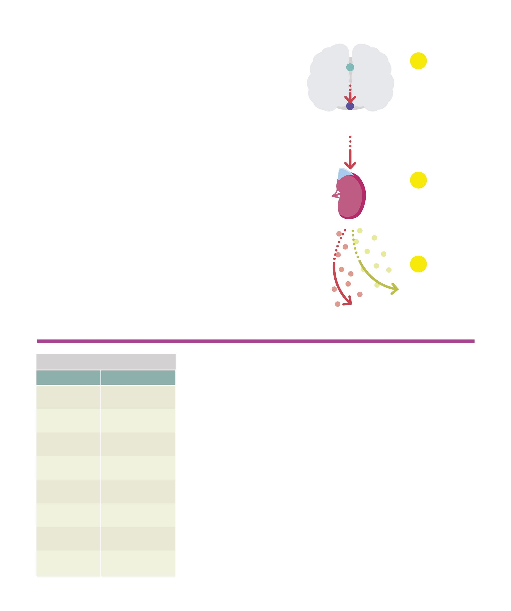
1
vùng dưới đồi kích thích tuyến yên sản xuất hormone adrenocorticotropic (ACTH).
Rối loạn lo âu là nhóm bệnh tâm thần đặc trưng bởi cảm giác bị đe dọa và sợ hãi mạnh mẽ, gồm cả các cơn hoảng loạn và việc đánh giá sai mức độ nguy hiểm. Dù có nhiều loại rối loạn lo âu, chúng thường có những triệu chứng tương tự nhau.
TUYẾN YÊN TRƯỚC
Các rối loạn lo âu thường gặp gồm rối loạn lo âu tổng quát (GAD), rối loạn lo âu xã hội, rối loạn hoảng loạn và rối loạn căng thẳng sau sang chấn (PTSD). Bên cạnh cảm giác sợ hãi, các triệu chứng cơ thể do mức hormone căng thẳng quá cao như cortisol và adrenaline gây ra. Triệu chứng gồm run rẩy; rối loạn giấc ngủ; tay chân lạnh, đổ mồ hôi, tê hoặc ngứa ran; khó thở; hồi hộp; buồn nôn và chóng mặt. Nhiều yếu tố ảnh hưởng đến rối loạn lo âu, gồm căng thẳng môi trường và khuynh hướng di truyền; nếu rối loạn chạy trong gia đình, chúng cũng có thể được học hỏi. Một số có thể liên quan đến thay đổi ở các vùng não kiểm soát nỗi sợ và các cảm xúc khác. Những người mắc GAD dễ có cảm giác lo lắng dữ dội, trong khi rối loạn hoảng loạn phát sinh từ phản ứng cơ thể cực độ trước căng thẳng.
Người mắc rối loạn lo âu xã hội cảm thấy lo lắng, có hình ảnh bản thân tiêu cực quá mức và luôn cảm thấy bị quan sát, đánh giá. Người bị PTSD có cảm giác bị đe dọa và luôn trong trạng thái căng thẳng, được kích hoạt bởi việc trải qua hoặc chứng kiến một sự kiện sang chấn.
2
sản xuất adrenaline và cortisol bởi các tuyến thượng thận.
3
kích hoạt nhiều phản ứng sinh lý khác nhau, chẳng hạn như nhịp tim nhanh hơn và tăng căng cơ.
CÁC CHỨNG ÁM ẢNH SỢ HÃI THƯỜNG GẶP
Nỗi sợ áp đảo, gây suy nhược đối với một vật, nơi chốn, tình huống, cảm giác hay con vật được gọi là ám ảnh sợ hãi. Ám ảnh sợ hãi gây ra những phản ứng cực đoan và liên quan đến cảm giác nguy hiểm mãnh liệt, không thực tế.
Sợ đi máy bay
Ám ảnh sợ hãi là một dạng rối loạn lo âu đặc trưng bởi phản ứng quá mức trước một tác nhân kích hoạt cụ thể. Trong một số trường hợp, chỉ nghĩ đến mối đe dọa cũng có thể khiến người ta thấy lo âu—tình trạng gọi là lo âu dự báo (anticipatory anxiety). Triệu chứng gồm chóng mặt, buồn nôn hoặc nôn, đổ mồ hôi, hồi hộp, khó thở và run rẩy. Nhìn chung ám ảnh sợ hãi được chia thành hai loại chính: ám ảnh cụ thể hay đơn giản; và ám ảnh phức tạp. Ám ảnh cụ thể tập trung vào một vật, con vật, tình huống hoặc hoạt động riêng biệt. Ví dụ gồm sợ độ cao (acrophobia) và sợ máu (hemophobia). Các tác nhân động vật thường gặp là rắn (ophidiophobia) và nhện (arachnophobia). Ám ảnh đơn giản thường bắt đầu trong thời thơ ấu hoặc vị thành niên nhưng có xu hướng giảm dần theo thời gian. Ám ảnh phức tạp thì gây suy nhược hơn, gồm ám ảnh xã hội hay rối loạn lo âu xã hội—nỗi sợ các tình huống xã hội.
- Rối loạn lo âu (Anxiety disorders)
- Để đáp ứng với căng thẳng,
- VÙNG DƯỚI ĐỒI
- Tuyến thượng thận
- ACTH kích thích
- THẬN
- Các yếu tố góp phần
- Adrenaline và cortisol
- ADRENALINE VÀ CORTISOL
- Ám ảnh sợ hãi (Phobias)
- ÁM ẢNH SỢ HÃI
- MÔ TẢ
- Ám ảnh sợ nhện (Arachnophobia)
- Sợ nhện
- Ám ảnh sợ bay (Aviophobia)
- Ám ảnh sợ không gian kín (Claustrophobia)
- Sợ những nơi chật hẹp, kín
- Ám ảnh sợ hề (Coulrophobia)
- Sợ hề
- Ám ảnh sợ vi khuẩn (Mysophobia)
- Sợ bị nhiễm vi khuẩn
- Ám ảnh sợ tử thi (Necrophobia)
- Sợ cái chết hoặc những thứ liên quan đến người chết
- Ám ảnh sợ mắc bệnh (Nosophobia)
- Sợ phát triển một căn bệnh cụ thể
- Ám ảnh sợ kim tiêm (Trypanophobia)
- Sợ tiêm chích hoặc kim y tế
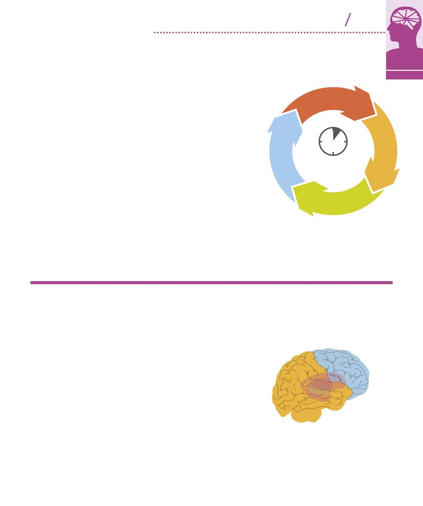
Rối loạn ám ảnh cưỡng chế (Obsessive-compulsive disorder)
Rối loạn ám ảnh cưỡng chế (OCD) là tình trạng sức khỏe tâm thần thường gặp, ảnh hưởng đến cả nam, nữ và trẻ em. Người mắc OCD trải qua những ý nghĩ xâm lấn lặp đi lặp lại, kèm theo nhu cầu thực hiện các hành động cụ thể nhiều lần để giảm bớt sự lo âu liên quan.
L O Â U
OCD có thể xuất hiện ở mọi lứa tuổi nhưng thường phát triển vào đầu tuổi trưởng thành. Bệnh thường có thể lần ra một sự kiện hoặc hoàn cảnh sang chấn xảy ra thời thơ ấu hoặc vị thành niên, và có thể bắt nguồn từ cảm giác sợ hãi, tội lỗi cùng trách nhiệm quá mức liên quan đến một sự việc cụ thể. Phần ám ảnh của OCD là một nỗi sợ, ý nghĩ, hình ảnh hay thôi thúc không mong muốn và khó chịu gọi là sự xâm lấn (intrusion), gây ra cảm giác lo âu, ghê tởm hoặc bất an. Khía cạnh cưỡng chế gồm một hành vi lặp lại hay thói quen tinh thần tạm thời làm dịu sự lo âu không chịu nổi do ám ảnh gây ra. Cả thuốc và liệu pháp hành vi nhận thức (CBT) đều có thể được dùng để kiểm soát triệu chứng.
Yếu tố di truyền
Khoảng một phần tư người mắc OCD có một người thân trong gia đình cũng bị rối loạn này, và các nghiên cứu trên cặp song sinh gợi ý khả năng có liên hệ di truyền. Người ta cũng cho rằng OCD làm gián đoạn sự liên lạc giữa các vùng não, gồm vỏ não quỹ đạo (orbitofrontal cortex) liên quan đến cảm giác phần thưởng và vỏ não đai trước (anterior cingulate cortex) liên quan đến phát hiện lỗi.
N H I P Đ Ô
Mất thời gian vì OCD Một mong muốn áp đảo được thực hiện các nghi thức được kích hoạt bởi sự lo âu do một ý nghĩ xâm lấn gây ra. Nhu cầu cấp thiết phải đếm hay kiểm tra đồ vật, rửa tay hoặc lặp lại chuỗi ý nghĩ có thể tiêu tốn nhiều giờ mỗi ngày.
Hội chứng Tourette (Tourette’s syndrome)
Hội chứng Tourette là một tình trạng thần kinh phức tạp khiến người bệnh phát ra những âm thanh và cử động không tự chủ gọi là tics. Bệnh hầu như luôn phát triển trong thời thơ ấu, thường sau hai tuổi.
Vỏ não trán liên quan đến tự kiểm soát chuỗi vận động
Tourette thường xuất hiện đầu thời thơ ấu nhưng trước 15 tuổi, và khả năng ảnh hưởng đến nam giới cao hơn nhiều so với nữ giới. Các tic cơ thể dao động từ chớp mắt, lăn mắt, nhăn mặt và nhún vai đến nhảy, xoay hoặc cúi người. Tic bằng giọng nói được biết đến nhiều nhất là chửi thề không phù hợp, dù trên thực tế điều này rất hiếm và chỉ ảnh hưởng đến khoảng một trong 10 người mắc bệnh. Những tic bằng giọng nói thường gặp nhất là phát ra tiếng gầm gừ, ho hoặc tiếng động vật.
Các tic có thể gây đau do căng cơ và thường tăng lên khi người bệnh căng thẳng, lo âu hoặc mệt mỏi. Triệu chứng có thể thay đổi và cải thiện dần theo thời gian, đôi khi khỏi hẳn. Tic của Tourette thường có trước đó những cảm giác mạnh như ngứa hoặc thôi thúc hắt hơi. Qua luyện tập, một số người bệnh học được cách dùng những tín hiệu này để kiểm soát triệu chứng trong các tình huống xã hội như ở trường. Người mắc Tourette cũng có thể bị OCD hoặc khó khăn trong học tập.
Đồi thị lọc và chuyển tiếp tín hiệu đến vỏ não
Các vùng não liên quan Người ta cho rằng tic ở Tourette bắt nguồn từ việc sản xuất quá mức chất dẫn truyền thần kinh dopamine, cũng như rối loạn chức năng ở các vùng não liên quan đến vận động như vỏ não trán, các hạch nền và đồi thị.
- C ƯỠ N G B Ư U
- Á M Ả N H
- CHIẾM ÍT NHẤT 1 GIỜ MỖI NGÀY
- f e i l e r y r r a
- Các hạch nền thực hiện

CÁC TÌNH TRẠNG LIÊN QUAN
Rối loạn triệu chứng cơ thể (SSD) đặc trưng bởi sự tập trung cực độ vào các triệu chứng cơ thể, có thể liên quan hoặc không liên quan đến một bệnh lý được chẩn đoán thực tế. Tuy nhiên, người mắc SSD thực sự tin rằng mình bị bệnh, và nỗi khổ của họ được trải nghiệm dưới dạng triệu chứng thân thể, hay “cơ thể” (somatic).
Rối loạn lo âu về bệnh (Illness anxiety disorder)
Còn được gọi là lo âu sức khỏe hoặc rối loạn giả bệnh (hypochondria), người mắc rối loạn lo âu về bệnh thường bận tâm với việc đã mắc hoặc sẽ mắc bệnh. Họ có thể không có triệu chứng cơ thể nào nhưng lại xem những trải nghiệm bình thường là dấu hiệu bệnh nghiêm trọng, liên tục tự kiểm tra và tìm kiếm sự trấn an vì lo âu.
SSD liên chặt với lo âu và trầm cảm. Các biểu hiện cơ thể thường gồm đau, yếu và mệt; khó thở là một phàn nàn phổ biến khác. Người mắc SSD tập trung vào tình trạng của mình đến mức thường không thể hoạt động bình thường. Họ lo lắng thái quá về sức khỏe và chú ý vào một hay vài triệu chứng, ngay cả khi không tìm thấy nguyên nhân y khoa cho các tình trạng họ mô tả. Việc điều trị gồm thuốc chống trầm cảm cùng các liệu pháp như liệu pháp hành vi nhận thức (CBT).
Rối loạn chuyển đổi (Conversion disorder)
Trong rối loạn chuyển đổi, các triệu chứng thần kinh như liệt, tê tay chân, vấn đề thị giác và rối loạn vận động xuất hiện như kết quả của căng thẳng tâm lý. Tình trạng này phổ biến nhất ở người có trải nghiệm sang chấn sớm hoặc suốt đời. Liệu pháp và thay đổi lối sống thường dẫn đến hồi phục.
Hội chứng Munchausen (Munchausen syndrome)
Hội chứng Munchausen do sang chấn cảm xúc nặng gây ra. Bệnh được xếp vào rối loạn giả tạo (factitious disorder)—tình trạng sức khỏe tâm thần trong đó một người cư xử như bị bệnh về tinh thần hoặc thể chất, cố tình tạo ra các triệu chứng.
HỘI CHỨNG MUNCHAUSEN GIÁN TIẾP
Munchausen gián tiếp (Munchausen by proxy) là một dạng rối loạn giả tạo trong đó người chăm sóc tạo ra hoặc trực tiếp gây ra triệu chứng bệnh hay chấn thương cho người dưới quyền kiểm soát của mình. Cũng được coi là một dạng lạm dụng thể chất và tinh thần, bệnh thường được áp đặt cho trẻ nhỏ bởi cha mẹ, nhưng đôi khi cho những người dễ tổn thương khác dưới sự chăm sóc của người giám hộ, chẳng hạn như cha mẹ già được con trai hay con gái chăm sóc.
Hội chứng Munchausen là bệnh tâm lý hiếm gặp và có xu hướng xảy ra ở người từng trải qua sự kiện thời thơ ấu sang chấn như bị lạm dụng cảm xúc hoặc bị bệnh, ở người có rối loạn nhân cách, hoặc ở người nuôi dưỡng sự bất mãn đối với những nhân vật quyền uy. Người ta cho đây là dạng cực đoan của hành vi tìm kiếm sự chú ý. Người bệnh có thể kể những câu chuyện về các sự việc kịch tính, nói dối về triệu chứng, làm triệu chứng nặng hơn bằng cách cố tình làm tổn thương vết thương hoặc nuốt độc tố, thậm chí sửa kết quả xét nghiệm và làm giả hồ sơ. Một dạng mới của rối loạn đã được gọi là Munchausen qua internet, trong đó một người giả vờ mắc bệnh cụ thể và tham gia một nhóm hỗ trợ trực tuyến dành cho người bệnh thật.
Dưới đây là một số triệu chứng thường thấy ở bệnh nhân mắc hội chứng Munchausen và các rối loạn giả tạo khác.
Bệnh sử y khoa dài, thường gồm việc nhập viện thường xuyên ở nhiều nơi và đi khám nhiều bác sĩ.
Kiến thức sách giáo khoa sâu rộng về bệnh được khai báo, cũng như về thực hành y khoa nói chung.
Sẵn sàng chịu các xét nghiệm, thăm dò y khoa, thậm chí cả phẫu thuật.
?
Không muốn cho nhân viên y tế liên lạc với bạn bè và gia đình, hoặc ít người đến thăm khi nằm viện.
Nhiều sẹo phẫu thuật hoặc dấu vết của nhiều thủ thuật.
Các tình trạng xấu đi không rõ lý do, hoặc không đáp ứng như mong đợi với liệu pháp chuẩn.
- Rối loạn triệu chứng cơ thể (Somatic symptom disorder)

Tâm thần phân liệt (Schizophrenia)
Tâm thần phân liệt là rối loạn sức khỏe tâm thần mà triệu chứng có thể gồm ảo tưởng và ảo giác thị giác hoặc thính giác. Đây là một dạng rối loạn tâm thần (psychosis), nghĩa là người bệnh có thể không phân biệt được tưởng tượng và thực tại.
Tâm thần phân liệt có thể là rối loạn khó đánh giá. Việc chẩn đoán gồm xem xét hành vi cảm xúc và nhận thức, được xác nhận khi có hai triệu chứng trở lên kéo dài hơn 30 ngày. Các triệu chứng gồm lời nói hay hành vi lộn xộn, trạng thái cứng đờ (catatonia), ảo tưởng hoặc ảo giác, và “triệu chứng tiêu cực” như thiếu cảm xúc hay thiếu lời nói. Có nhiều loại tâm thần phân liệt, mỗi loại có triệu chứng khác nhau. Người bị tâm thân phân liệt kiểu hoang tưởng quá nghi ngờ động cơ của người khác và tin rằng mình đang bị âm mưu hại. Người bị dạng cứng đờ có thể thu mình về cảm xúc đến mức tưởng như bị liệt, trong khi dạng lộn xộn gồm phản ứng phẳng lặng hoặc không phù hợp và không thể hoàn thành công việc hằng ngày.
Từ “tâm thần phân liệt” mang nghĩa “tâm trí bị tách”. Người mắc rối loạn này không có nhiều nhân cách, mà bị cắt đứt khỏi thực tại.
Bất thường cấu trúc Não của người bị tâm thần phân liệt cho thấy sự khác biệt cấu trúc ở một số vùng cụ thể như thùy trán và thùy thái dương. Chúng cũng chứa ít chất xám hơn bình thường, và điều này ảnh hưởng đến điều hòa cảm xúc, kiểm soát vận động và tri giác cảm giác.
NGUYÊN NHÂN CỦA TÂM THẦN PHÂN LIỆT
Dù đã nghiên cứu nhiều năm, nguyên nhân của tâm thần phân liệt vẫn chưa rõ. Bệnh có thể liên quan đến di truyền, hóa học não, trải nghiệm sống, dùng chất gây nghiện, sang chấn trước khi sinh hoặc lúc sinh, hay sự kết hợp của những yếu tố này.
Bất thường não bộ
Khoảng 80 phần trăm người bị tâm thần phân liệt có khuynh hướng di truyền bệnh. Tuy nhiên, gen không phải là nguyên nhân duy nhất, vì các yếu tố môi trường và tiền sử gia đình cũng được cho là có liên quan.
Các nghiên cứu chụp cộng hưởng từ (MRI) về não cho thấy chất xám giảm ở nhiều vùng, gồm vỏ não trước trán. Vùng này quan trọng cho việc điều hòa cảm xúc, ra quyết định và các nhiệm vụ nhận thức phức tạp như lập kế hoạch hiệu quả.
Môi trường
Hai chất hóa học trong não là glutamate và dopamine có liên quan đến tâm thần phân liệt. Mức dopamine cao có thể gây ảo giác. Mức glutamate thấp có thể kích hoạt các đợt loạn thần, trong khi mức cao làm tổn thương tế bào não.
Khuynh hướng phát triển tâm thần phân liệt có thể bị kích hoạt bởi việc thai nhi tiếp xúc với virus, sang chấn lúc sinh hoặc suy dinh dưỡng. Các yếu tố kích hoạt từ môi trường gồm căng thẳng cực độ, quan hệ gia đình hoặc sử dụng chất làm thay đổi tâm trí.
NÃO BỊ TÂM THẦN PHÂN LIỆT
Mất mô Một số bệnh nhân tâm thần phân liệt bị giãn não thất (các hốc chứa dịch bên trong não) do mô não ở vùng lân cận bị giảm.
- Rối loạn chức năng thùy trán dẫn đến ảo giác
- 1,1%
- Có thể xuất hiện bất thường ở thùy thái dương
- Hải mã thường bị gián đoạn
- Não thất giãn to do mô não bị giảm
- Di truyền
- Hóa học não bộ
- NÃO KHỎE MẠNH

TÍNH NGHIỆN ĐƯỢC DI TRUYỀN Ở MỨC NÀO?
Nghiện bắt nguồn từ một rối loạn chức năng mạn tính của một hệ thống trong não bộ điều hòa phần thưởng, động lực và trí nhớ. Một người mắc chứng nghiện khao khát một chất hoặc một hành vi, thường không quan tâm vào lúc đó đến hậu quả của việc theo đuổi nó.
Các nghiên cứu liên quan đến cặp sinh đôi và người được nhận nuôi cho thấy khoảng 40–60% khuynh hướng mắc nghiện là do di truyền.
Một chứng nghiện bao gồm việc sử dụng lặp đi lặp lại, hoặc tham gia vào, một chất hoặc một hoạt động để có được cảm giác vui sướng. Các triệu chứng tâm lý và xã hội bao gồm nhiều hành vi, chẳng hạn như thiếu tự kiểm soát, ám ảnh và chấp nhận rủi ro. Các triệu chứng thể chất thường gặp là thay đổi khẩu vị, ngoại hình, mất ngủ, chấn thương hoặc bệnh do lạm dụng chất gây ra, và khả năng chịu đựng ngày càng tăng đối với nguồn gây nghiện, đòi hỏi phải dùng ngày càng nhiều hơn. Nghiện ảnh hưởng đến cấu trúc não bộ cũng như cách nó hoạt động. Con người cảm thấy phấn khích và vui sướng khi não giải phóng các chất dẫn truyền thần kinh như dopamine, tiếp theo là cảm giác thỏa mãn mãnh liệt từ các hormone như endorphin. Endorphin giảm căng thẳng và đau đớn theo cách tương tự như các loại thuốc như cocaine. Với nhiều người, các hoạt động sáng tạo hoặc thể chất, chẳng hạn như chơi nhạc cụ hoặc tập thể dục, giải phóng đủ chất dẫn truyền thần kinh để mang lại niềm vui và sự thỏa mãn. Tuy nhiên, với những người khác, một số loại thuốc, rượu và các hoạt động mạo hiểm như đánh bạc tạo ra hình thức vui sướng nhanh hơn và cực đoan hơn nhiều trước khi cuối cùng làm gián đoạn và tổn hại đến mạch dẫn truyền thần kinh bình thường. Những kích thích nhân tạo này nhấn chìm não bộ trong dopamine rồi tạo ra cảm giác thỏa mãn mãnh liệt khi endorphin được giải phóng. Trạng thái “phấn khích” đó được hippocampus (hải mã) ghi nhận như một ký ức dài hạn, dẫn đến mong muốn lặp lại trải nghiệm. Khi mong muốn đó lấn át hành vi bình thường và khả năng hoạt động, nó được xếp vào loại nghiện.
để đạt được mức phần thưởng dễ chịu tương tự. Việc loại bỏ nguồn gây nghiện gây ra các phản ứng như ra mồ hôi, run rẩy, nôn mửa và thay đổi hành vi.
Niềm vui hóa học
Lý do tại sao một người dễ mắc nghiện chưa được hiểu đầy đủ, nhưng bằng chứng cho thấy cấu trúc di truyền có thể là một yếu tố trong một số trường hợp. Xét cho cùng, gen không chỉ quyết định cách chúng ta phản ứng với các chất mà còn quyết định những phản ứng xảy ra khi ngừng sử dụng các chất đó. Điều này có thể giải thích tại sao một số người lại dễ phụ thuộc vào rượu hơn người khác, chẳng hạn. Việc đánh giá một cá nhân bị nghi ngờ mắc nghiện bao gồm sử dụng các xét nghiệm chẩn đoán cũng như các đánh giá tâm lý. Sau đó, họ được chuyển đến các chuyên gia để điều trị và phục hồi.
NGƯỜI SỬ DỤNG COCAINE
Việc sử dụng cocaine và dopamine. Sử dụng cocaine làm giảm số lượng thụ thể sẵn có của chất dẫn truyền thần kinh dopamine. Kết quả là, theo thời gian, người dùng phải tiêu thụ nhiều thuốc hơn để đạt được cảm giác phần thưởng như cũ.
Chất xám và methamphetamine. Việc sử dụng methamphetamine làm co lại lượng chất xám ở vỏ não trán, cùng với các vùng khác, dẫn đến suy giảm chức năng tinh thần.
- Ở MỨC ĐỘ NÀO
- Nghiện (addiction)
- Số lượng thụ thể dopamine bình thường
- Những vùng suy giảm chất xám nhiều nhất
- NÃO BỘ KHỎE MẠNH
- Ít thụ thể dopamine sẵn có hơn

Rối loạn nhân cách
Những người thể hiện các hành vi kéo dài không phù hợp, cứng nhắc hoặc bất thường, hoặc gặp vấn đề trong quan hệ với người khác, mắc rối loạn nhân cách (personality disorder), hay PD. Có nhiều loại PD khác nhau, từ chống đối xã hội (BPD) đến phân liệt kiểu, nhưng một số người bệnh có thể tự quản lý cuộc sống mà không cần trợ giúp y tế.
Rối loạn nhân cách bao gồm một kiểu hành vi nhất quán khác biệt rõ rệt với những gì được xã hội cho là chấp nhận được. Các triệu chứng thường xuất hiện vào tuổi vị thành niên và có thể dẫn đến khó khăn dài hạn cho người bệnh, cả trong việc xây dựng các mối quan hệ lẫn việc chức năng hiệu quả trong các tình huống xã hội. Nhiều loại PD được xếp rộng rãi vào ba nhóm hay “cụm”: hoài nghi; cảm xúc và bốc đồng; và lo âu (xem ô bên dưới). Mỗi loại có các triệu chứng riêng. Ví dụ, một người mắc rối loạn nhân cách hoài nghi thường chống đối xã hội, dễ bực bội và khó kiểm soát cơn giận. Rối loạn nhân cách ranh giới (borderline personality disorder, BPD) — một dạng PD cảm xúc và bốc đồng — liên quan đến lối tư duy rối loạn, hành vi bốc đồng và khó kiểm soát cảm xúc. Cụm lo âu bao gồm rối loạn nhân cách tránh né, được đặc trưng bởi cảm giác tự ti và nhạy cảm cực độ với lời phê phán và sự từ chối. Không có gì đáng ngạc nhiên khi những người mắc loại PD này cũng trải qua lo âu xã hội nghiêm trọng. Một số người mắc PD có amygdala (hạch hạnh nhân) bất thường — một phần của hệ viền (limbic system), bộ phận nguyên thủy nhất của não điều hòa sợ hãi và hung hăng. Những người mắc PD liên quan đến mức sợ hãi quá mức thường có hạch hạnh nhân nhỏ hơn những người không mắc, và hạch hạnh nhân càng nhỏ thì dường như càng hoạt động quá mức. Ngoài ra, hippocampus (hải mã), vốn cũng giúp kiểm soát cảm xúc, thường bị teo nhỏ trong não của những người mắc PD. Người mắc PD thường thấy liệu pháp trò chuyện giúp họ hiểu rõ hơn về suy nghĩ, cảm xúc và hành vi của mình. Các cộng đồng trị liệu, một hình thức điều trị nhóm, cũng có thể hiệu quả nhưng đòi hỏi mức độ cam kết cao. Thuốc cũng có thể được sử dụng trong một số trường hợp để kiểm soát trầm cảm và lo âu.
CỤM C: LO ÂU
Những người mắc các PD này thường bị coi là kỳ lạ hoặc “lệch chuẩn”. Họ sợ các tình huống xã hội và gặp khó khăn trong việc quan hệ với người khác, những người mà họ nhìn nhận với sự hoài nghi sâu sắc. Một số người bệnh có vẻ lạnh lùng, tách biệt, số khác thì hướng nội. Các loại PD này được đặc trưng bởi sự thiếu kiểm soát cảm xúc. Những người thuộc cụm B thường bắt nạt hoặc thao túng người khác, ích kỷ và có xu hướng biểu diễn kịch tính, thái quá, tạo dựng những mối quan hệ mãnh liệt nhưng ngắn ngủi.
Đây là cụm PD đáng sợ nhất. Những người trong nhóm này nhìn chung lo âu, dễ phục tùng người khác và gặp khó khăn trong việc tự đối phó với cuộc sống. Họ có xu hướng quá nhạy cảm, ức chế, cực kỳ rụt rè hoặc cầu toàn.
- PHẦN TRĂM
- Não bộ trong rối loạn nhân cách
- CÁC CỤM RỐI LOẠN NHÂN CÁCH
- CỤM A: HOÀI NGHI
- CỤM B: CẢM XÚC VÀ BỐC ĐỒNG
- Hoang tưởng
- Chống đối xã hội
- Tránh né
- Phân liệt
- Ranh giới
- Phụ thuộc
- Phân liệt kiểu
- Kịch tính
- Cưỡng chế ám ảnh
- Tự yêu
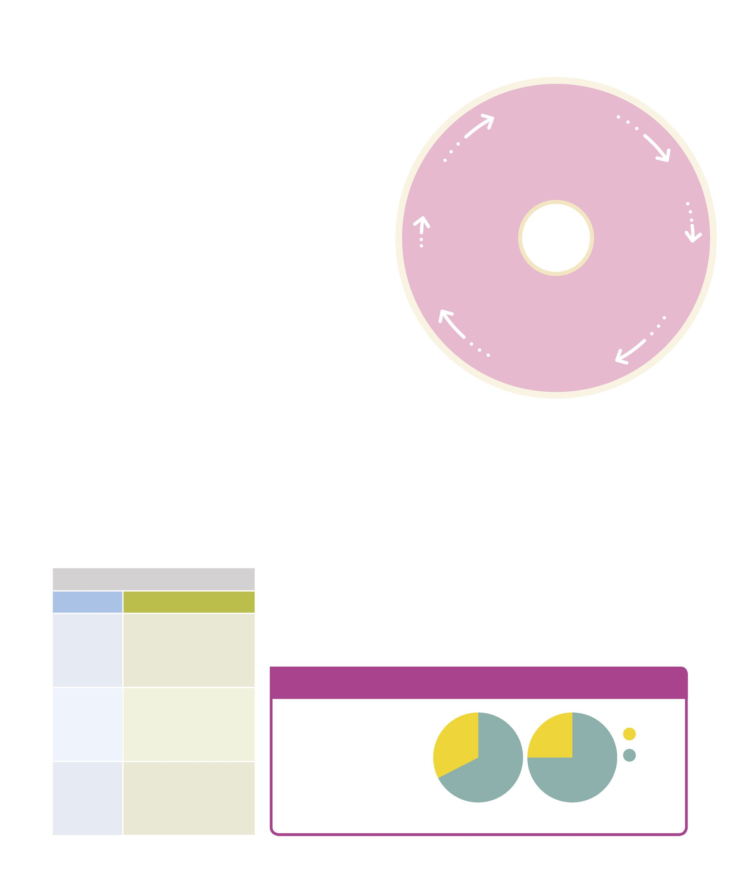
1. Người đó ăn
một lượng lớn thực phẩm nhanh chóng, thường khi không ai hay biết, và có thể rơi vào một dạng trạng thái mê muội khi làm vậy.
Rối loạn ăn uống (eating disorder) là các vấn đề sức khỏe tâm thần mang tính cảm xúc, bao gồm mối quan hệ cực đoan với thức ăn. Hầu hết xoay quanh sự ám ảnh tập trung vào cân nặng và hình dáng cơ thể, có thể gây tổn hại cho sức khỏe và thậm chí đe dọa tính mạng.
2. Lo âu giảm
vì việc ăn tạm thời làm tê liệt các cảm giác căng thẳng, buồn bã hoặc tức giận.
cấp bách; người đó thường mua thức ăn đặc biệt cho mục đích này.
Mặc dù có thể xuất hiện ở bất kỳ giai đoạn nào của cuộc đời, rối loạn ăn uống thường phát triển ở nhóm tuổi vị thành niên và thanh niên. Ba loại phổ biến nhất là chán ăn thần kinh (anorexia nervosa, hay đơn giản là anorexia), bulimia nervosa (bulimia) và rối loạn ăn uống theo cơn (binge-eating disorder, BED; xem bảng bên dưới). Chẩn đoán bao gồm đánh giá tâm lý cũng như khám thực thể, chẳng hạn như xét nghiệm máu và đo chỉ số khối cơ thể (BMI). Chán ăn luôn kèm theo sụt cân, và BMI rất thấp thường được ghi nhận trong chẩn đoán. Những người mắc cả bulimia lẫn BED thường không có BMI thấp và có thể hơi thừa cân. Nguyên nhân của rối loạn ăn uống chưa được hiểu đầy đủ, nhưng những người mắc bệnh có khả năng có người thân trong gia đình từng mắc rối loạn ăn uống, trầm cảm, lạm dụng chất hoặc nghiện hơn. Áp lực và chỉ trích từ xã hội có thể góp phần tạo ra sự tập trung vào thói quen ăn uống, hình dáng cơ thể hoặc cân nặng. Một số nghề nghiệp, chẳng hạn như múa ba lê, diễn xuất, thể thao hoặc người mẫu, nơi tập trung vào vóc dáng thon gọn, Các triệu chứng của rối loạn ăn uống bao gồm ám ảnh về cân nặng và hình dáng cơ thể, tránh các hoạt động liên quan đến thức ăn, ăn rất ít hoặc ăn quá nhiều rồi ói ra (tự gây nôn), dùng thuốc xổ nhẹ ở mức cực đoan và tập thể dục quá nhiều. Người bệnh cũng có thể gặp các vấn đề về dạ dày, cân nặng bất thường so với tuổi và chiều cao, rối loạn kinh nguyệt, vấn đề về răng, nhạy cảm với lạnh, mệt mỏi hoặc chóng mặt.
3. Tâm trạng thấp trở lại,
trở nên ngày càng chiếm ưu thế khi những cảm xúc đau khổ tăng lên.
kéo theo sự tự ghét bỏ và cảm giác ghê tởm, do tội lỗi và xấu hổ liên quan đến việc ăn theo cơn.
4. Lo âu tăng
vì việc ăn chỉ mang lại sự giảm nhẹ tạm thời cơn đau tâm lý. Trầm cảm xuất hiện.
Vòng lặp ăn theo cơn. Những người mắc rối loạn ăn uống theo cơn dùng thức ăn để làm tê liệt nỗi đau cảm xúc thay vì giải quyết tích cực nguyên nhân tâm lý của nó. Kết quả là một vòng lặp hủy hoại.
Các yếu tố tiềm ẩn
nên có khả năng có số người mắc rối loạn ăn uống cao hơn các nghề khác. Người mắc rối loạn ăn uống cũng có thể chịu đựng lo âu, lòng tự trọng thấp, chủ nghĩa hoàn hảo và từng bị lạm dụng tình dục. Điều trị bao gồm giáo dục dinh dưỡng, liệu pháp tâm lý hoặc liệu pháp trò chuyện, và các chương trình nhóm.
Chán ăn thần kinh (anorexia nervosa)
Chủ yếu ảnh hưởng đến phụ nữ trẻ. Bao gồm mong muốn ám ảnh duy trì cân nặng thấp bằng cách ăn ít và tập thể dục quá mức.
Rối loạn ăn ói (bulimia nervosa)
Rối loạn này bao gồm các cơn ăn quá mức và ói ra. Cân nặng cơ thể thường bình thường, nhưng người mắc bulimia có hình ảnh bản thân cực kỳ tiêu cực.
Tại Hoa Kỳ và nhiều quốc gia khác, phụ nữ được chẩn đoán mắc rối loạn ăn uống nhiều hơn nam giới. Tuy nhiên, tỷ lệ ở nam giới có thể bị đánh giá thấp vì họ ít có khả năng tìm kiếm sự giúp đỡ hơn phụ nữ.
Rối loạn ăn uống theo cơn (binge-eating disorder)
Việc ăn uống quá mức thường xuyên, thường được lên kế hoạch và tiêu thụ nhanh chóng trong bí mật, sau đó là cảm giác tội lỗi và xấu hổ mãnh liệt.
- Rối loạn ăn uống
- 6. Nhu cầu ăn theo cơn trở nên
- 5. Những suy nghĩ về thức ăn
- CÁC LOẠI RỐI LOẠN ĂN UỐNG
- RỐI LOẠN — MÔ TẢ
- XU HƯỚNG NỮ GIỚI
- CHÚ GIẢI
- Nam giới
- Nữ giới
- Nữ giới 64%
- Nữ giới 75%
- BULIMIA
- ANOREXIA

Khuyết tật và khó khăn học tập
Khuyết tật học tập là dấu hiệu của khả năng nhận thức bị suy giảm và được phản ánh trong trí tuệ chung hoặc IQ của một người. Khó khăn học tập không ảnh hưởng đến mức IQ nhưng làm cho việc xử lý thông tin trở nên khó khăn hơn. Cả hai đều ảnh hưởng đến cách một người tiếp thu kiến thức, nắm vững kỹ năng mới và giao tiếp.
Ước tính có từ 1–3% dân số thế giới mắc một dạng khuyết tật học tập nào đó, và người dân ở các nước thu nhập thấp chịu ảnh hưởng nặng nề nhất.
Khuyết tật trí tuệ hoặc khuyết tật học tập xảy ra khi sự phát triển của não bộ bị ảnh hưởng theo một cách nào đó, dù là do chấn thương hay bất thường di truyền. Khuyết tật học tập dao động từ mức độ nhẹ và trung bình đến nặng và sâu sắc. Mức nặng nhất thậm chí có thể khiến người bệnh gặp khó khăn trong việc tự chăm sóc các kỹ năng sống độc lập. Các nguyên nhân cụ thể bao gồm đột biến gen như trong hội chứng Down, hoặc chấn thương đầu ở thai nhi, bệnh tật của mẹ, thiếu oxy lên não trước hoặc trong khi sinh, hoặc tổn thương não do bệnh tật hay chấn thương thời thơ ấu. Người bệnh cũng có thể mắc kèm các khó khăn học tập — ví dụ, người mắc bại não (cerebral palsy) (xem tr.204) có thể bị suy giảm chức năng nhận thức và chứng rối loạn phối hợp vận động, hoặc một người trong phổ tự kỷ có thể có dạng chậm phát triển nặng. Các tình trạng khuyết tật học tập không có nguyên nhân xác định được. Không có hai trường hợp khuyết tật học tập nào giống hệt nhau, và chúng có thể bao gồm nhiều triệu chứng đa dạng. Một số người mắc khuyết tật học tập có thể nói chuyện dễ dàng và tự chăm sóc bản thân nhưng có thể mất nhiều thời gian hơn bình thường để học những điều mới. Những người khác có thể hoàn toàn không giao tiếp được. Một số người cũng có thể gặp vấn đề về vận động, dị tật tim hoặc động kinh, có thể rút ngắn tuổi thọ. Việc phân biệt một số dạng khuyết tật học tập với khó khăn học tập có thể là thách thức. Tuy nhiên, nhìn chung, khó khăn học tập không ảnh hưởng đến khả năng hay năng lực trí tuệ mà thay vào đó tác động đến cách não bộ xử lý dữ liệu. Chẳng hạn, một người mắc chứng khó đọc (dyslexia), khiến việc đọc, viết và chính tả trở nên khó khăn, thường cũng mắc chứng rối loạn phối hợp vận động (dyspraxia), ảnh hưởng đến kỹ năng vận động tinh và sự phối hợp.
Chứng khó đọc (dyslexia)
Khả năng học đọc và/hoặc viết bị suy giảm. Ngoài kỹ năng đọc và chính tả kém, người mắc chứng khó đọc có thể gặp vấn đề với trình tự, chẳng hạn như thứ tự ngày tháng, hoặc khó khăn trong việc sắp xếp suy nghĩ của mình.
Chứng khó học toán (dyscalculia)
Khó khăn trong việc xử lý số, học các khái niệm số học như đếm và thực hiện các phép tính toán học. Chứng khó học toán thường xuất hiện cùng với chứng khó đọc hoặc các khó khăn học tập khác.
Chứng mất cảm âm (amusia)
Theo nghĩa đen là “thiếu âm nhạc”, chứng mất cảm âm đôi khi được gọi là điếc âm điệu và chỉ tình trạng một người có thính giác bình thường không thể nhận ra các âm điệu hay nhịp điệu âm nhạc, hoặc tái tạo lại chúng.
Rối loạn phối hợp vận động (dyspraxia) (rối loạn phối hợp phát triển)
Không có khả năng thực hiện các động tác thành thạo với độ chính xác, chứng rối loạn phối hợp vận động thường được nhận ra lần đầu thời thơ ấu như sự “vụng về”. Nó có thể gây khó khăn trong việc thiết lập các mối quan hệ không gian, chẳng hạn như định vị vật thể.
Não bộ của người mắc chứng khó đọc. Các vùng não được kích hoạt trong khi đọc khác biệt rất lớn ở người đọc bình thường và người mắc chứng khó đọc. Ở người mắc chứng khó đọc, chỉ hồi trán dưới bên trái được kích hoạt, nhưng điều này đi kèm với hoạt động tăng lên ở bán cầu não phải — đó là lý do nhiều người mắc chứng khó đọc rất sáng tạo.
Suy giảm ngôn ngữ cụ thể (specific language impairment)
Được biểu hiện bằng sự chậm trễ trong việc tiếp thu kỹ năng ngôn ngữ khi không có chậm phát triển hay mất thính lực, chứng suy giảm ngôn ngữ cụ thể có liên hệ di truyền chặt chẽ và thường xuất hiện trong gia đình.
- KHUYẾT TẬT HỌC TẬP PHỔ BIẾN ĐẾN MỨC NÀO?
- Khó khăn học tập
- Điểm nối thái dương-đỉnh bên trái
- Vỏ não thái dương dưới bên trái
- TÊN
- MÔ TẢ
- NGƯỜI ĐỌC BÌNH THƯỜNG
- Hồi trán dưới bên trái
- NGƯỜI ĐỌC MẮC CHỨNG KHÓ ĐỌC

Rối loạn tăng động giảm chú ý (attention deficit hyperactivity disorder, ADHD)
Sự không chú ý, tăng động và bốc đồng là các triệu chứng chính của rối loạn sức khỏe tâm thần được gọi là rối loạn tăng động giảm chú ý, hay ADHD. Rối loạn này thường xuất hiện từ nhỏ, nhưng triệu chứng có thể tăng lên từ 6 đến 12 tuổi và kéo dài đến tuổi trưởng thành.
Một số phụ huynh ghi nhận hành vi bùng phát sau khi ăn một số loại thực phẩm nhất định, nhưng không có bằng chứng rõ ràng cho rằng ADHD do chế độ ăn uống hoặc vấn đề dinh dưỡng gây ra.
Các triệu chứng chính của ADHD bao gồm hành động thiếu suy nghĩ, khó tập trung, “dễ nổi nóng”, thiếu tổ chức, khó xếp thứ tự ưu tiên, khó làm nhiều việc cùng lúc và cực kỳ hoạt động hoặc bồn chồn. Mặc dù rối loạn giảm chú ý (attention deficit disorder, ADD) có các triệu chứng tương tự, người mắc ADD ít tăng động hơn và vấn đề chính của họ là không thể tập trung. Các triệu chứng ADHD có thể cải thiện theo tuổi tác, nhưng nhiều người lớn được chẩn đoán mắc bệnh từ nhỏ có thể tiếp tục gặp vấn đề suốt cuộc đời. Những khó khăn này thường trở nên rõ rệt tại nơi làm việc, nơi nhân viên phải tuân thủ thói quen và quy tắc; trong tình huống đó, một người mắc ADHD có thể làm việc kém hơn mức bình thường mong đợi.
Thêm vào đó, người mắc ADHD cũng có thể gặp các vấn đề khác, chẳng hạn như rối loạn giấc ngủ và lo âu.
Điều gì gây ra ADHD?
liên quan đến mức trí tuệ hay năng lực. Nghiên cứu đã phát hiện ra các khác biệt về sinh học và cấu trúc, bao gồm kích thước nhỏ hơn và lưu lượng máu thấp hơn, trong não của người mắc ADHD so với người không mắc. Một số nghiên cứu cho thấy các chất hóa học trong não như dopamine có thể thấp hơn mức bình thường ở những người mắc ADHD.
Vì ADHD là một vấn đề phát triển có vẻ di truyền trong gia đình, các nhà nghiên cứu cho rằng rối loạn này có một số cơ sở di truyền. Nếu lỗi di truyền là thủ phạm, chúng có thể phức tạp và liên quan đến nhiều hơn một gen. Tình trạng này cũng được liên hệ với tổn thương thai nhi do người mẹ hút thuốc hoặc uống rượu khi mang thai. Sinh non hoặc tiếp xúc với độc tố như chì khi còn nhỏ cũng có thể gây ra ADHD. Người mắc ADHD thường có khó khăn học tập (xem tr.215), mặc dù những khó khăn này không nhất thiết
BỐC ĐỒNG
Tăng động là thuật ngữ dùng cho người có mức độ hoạt động bất thường hoặc cực cao. Một người tăng động rất bồn chồn, dễ bị phân tâm ở trường học hoặc nơi làm việc, và thường không thể ngồi yên lâu hơn vài giây hoặc vài phút. Sự giảm chú ý liên quan đến ADHD. Tình trạng này được định nghĩa bằng các hành vi như thiếu tập trung, không nhận ra nhu cầu của người khác, hoặc đãng trí và không có khả năng duy trì sự chú ý vào vấn đề đang giải quyết.
Tính bốc đồng được đặc trưng bởi các hành động thực hiện mà không có bất kỳ sự lên kế hoạch trước hay nhận thức về hậu quả trước mắt hoặc trong tương lai. Các xung động có thể liên quan đến tình huống cảm xúc và hoạt động thể chất, và có thể dường như không phải là tự nguyện.
- TĂNG ĐỘNG
- GIẢM CHÚ Ý
- Khó ngồi yên
- Khó tập trung
- Thường xuyên cắt ngang lời người khác
- Liên tục ngồn ngộn
- Vụng về
- Không biết chờ lượt
- Nói to hơn người khác
- Dễ bị phân tâm
- Nói quá nhiều
- Ít hoặc không có cảm giác về nguy hiểm
- Kỹ năng tổ chức kém
- Hành động không suy nghĩ
- Hay quên
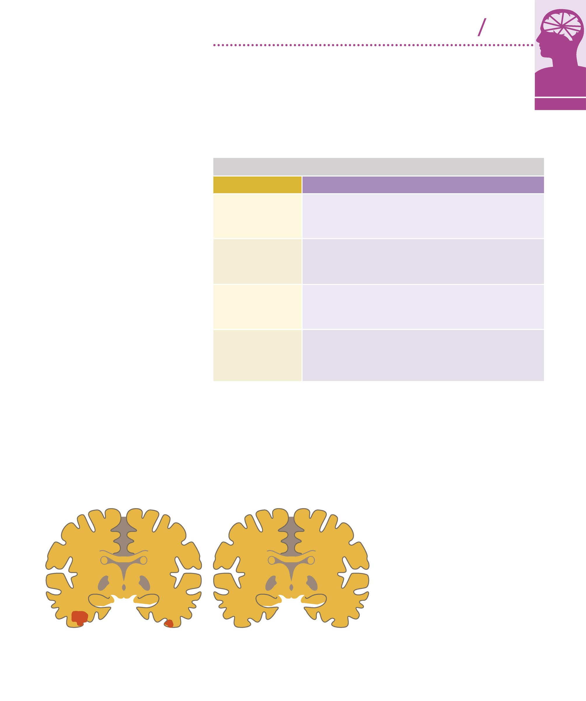
Rối loạn phổ tự kỷ
Rối loạn phổ tự kỷ (autism spectrum disorders, ASD) là thuật ngữ dùng để mô tả một nhóm các vấn đề phát triển, tất cả đều được đặc trưng bởi khó khăn trong giao tiếp và hành vi. Từ “phổ” đề cập đến sự đa dạng rộng rãi về các loại triệu chứng và mức độ nghiêm trọng mà người mắc ASD trải qua.
Người mắc ASD gặp khó khăn trong tương tác và giao tiếp với người khác. Họ cũng có xu hướng có sở thích hạn hẹp và hành vi lặp đi lặp lại, và thường nhạy cảm hơn hoặc kém nhạy cảm hơn người khác với ánh sáng, âm thanh hoặc nhiệt độ. Điều này khiến họ thu mình lại. ASD xuất hiện ở những người thuộc mọi mức độ năng lực trí tuệ và thường được chẩn đoán nhất trong hai năm đầu đời. Đây là tình trạng suốt đời. Các triệu chứng thể chất có thể bao gồm các cử động lặp lại của cơ thể, chẳng hạn như đi lại quanh quẩn, lắc lư hoặc vỗ tay.
Giao tiếp xã hội
ASD ảnh hưởng đến giao tiếp xã hội vì sự phát triển ngôn ngữ bị suy giảm. Các vấn đề giao tiếp xã hội bằng lời và không bằng lời bao gồm khó khăn trong việc giải thích các tình huống xã hội, nhận biết các tín hiệu xã hội và các tương tác hội thoại thô lậu hoặc không phù hợp.
Hành vi lặp lại
Người mắc ASD thường tham gia vào các hoạt động lặp đi lặp lại, chẳng hạn như vỗ tay hoặc lắc lư cơ thể, hoặc có thể tự hại mình bằng cách liên tục cắn hoặc bóc da. Họ cũng có thể xoay người hoặc thực hiện các cử động phức tạp khác của cơ thể, cùng với các nghi thức như đếm hoặc sắp xếp đồ vật.
Sở thích tập trung
Người mắc tự kỷ thường suy nghĩ theo lối rất đen trắng, với sự tập trung mãnh liệt vào những sở thích hoặc ám ảnh cụ thể. Những điều này có thể dao động từ việc quay tròn đồ vật đến thu thập ngày sinh hoặc nhận dạng đường bay.
Nhạy cảm cảm giác
Một dạng vấn đề xử lý cảm giác nào đó thường (dù không phải luôn luôn) liên quan đến chẩn đoán ASD. Người bệnh có thể quá nhạy cảm hoặc kém nhạy cảm và gặp khó khăn với mùi, vị, thị giác, thính giác, xúc giác, thăng bằng, cử động mắt và nhận thức về cơ thể.
Vấn đề giao tiếp
Trẻ mắc ASD có thể gặp khó khăn về ngôn ngữ, và một số trẻ bắt đầu nói tương đối muộn. Giọng nói của các em có thể rất đều đều, rất nhanh hoặc kiểu hát. Khoảng 40% trẻ mắc ASD hoàn toàn không nói, và từ 25 đến 30% phát triển một số kỹ năng ngôn ngữ thời thơ ấu nhưng sau đó lại mất đi.
Người lớn mắc ASD có chức năng cao có thể thành công trong các lĩnh vực học thuật nhưng lại gặp khó khăn với các kỹ năng thực tế và xã hội, chẳng hạn như hiểu các tín hiệu xã hội. Hầu hết có vẻ thô lậu, không thể nói dối và có thể tập trung ám ảnh vào một khía cạnh của cuộc sống, chẳng hạn như sự sạch sẽ.
Sự vụng về trong xã hội thường đi kèm với lo âu xã hội. Các triệu chứng khác của ASD bao gồm nhận thức cực kỳ nhạy với tiếng ồn, mùi, xúc chạm hoặc ánh sáng, và sở thích ăn uống cực đoan. Người mắc ASD có khuyết tật trí tuệ có thể thể hiện năng lực cao ở các lĩnh vực khác như có trí nhớ ảnh hoặc năng lực về số; tuy nhiên, đôi khi khuyết tật sâu sắc đến mức người bệnh không thể nói có ý nghĩa, có hành vi tự hại và cần được chăm sóc hàng ngày.
So sánh giữa não bộ của người mắc ASD và não bộ bình thường. Người mắc ASD gặp khó khăn trong việc xử lý khuôn mặt. Ở người không mắc tự kỷ, hoạt động xuất hiện ở hồi fusiform của thùy thái dương, nơi diễn ra việc nhận diện. Ở não bộ của người mắc tự kỷ, không có hoạt động tương ứng như vậy.
- TRIỆU CHỨNG CỦA RỐI LOẠN PHỔ TỰ KỶ
- TRIỆU CHỨNG
- MÔ TẢ
- Hoạt động ở hồi fusiform
- Không có hoạt động ở hồi fusiform
- NÃO BỘ BÌNH THƯỜNG
- NÃO BỘ MẮC TỰ KỶ